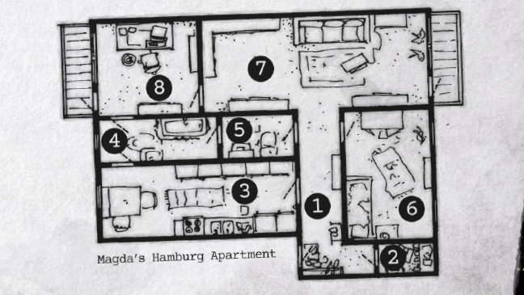
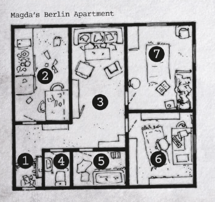

KAPITEL 1: MÖRDARNAS DANS
"Блокада Ленинграда" (Belägringen av Leningrad)
Tema: Första kontakten, Infektion, Tragedi
Ton: Slow-burn mystery, intellektuell thriller som övergår i personlig skräck
Längd: 10-12 scener, 2-4 sessioner
📋 ÖVERSIKT
Kapitlets Mål
- Möta Magda Orlova: Etablera koppling mellan Trip 19 (1940) och Black Madonna (1942)
- Följa ledtrådar till Europa: Resa från Virginia → Hamburg → Berlin
- Bevittna Magdas död: Första konfrontation med övernaturligt våld
- Infiltrera Slavic Association: Möta de tre ryssarna (Anton, Sasha, Filip)
- Överleva Pogodins mansion: Konfrontation med ritualen och transformationen
- Bli "märkta": Infekteras av parasiten och märkas av Det Som Fängslades
Scen-ordning (Snabbreferens)
- Lovettsville (Session 3) → Möter Magda, delar Volkov-forskning
- Hamburg - Författarkvällen → Magda presenterar, de tre männen dyker upp
- Berlin - Charité Hospital → Magda dör, spelarna undersöker
- Magdas lägenhet → Hitta dagbok, ledtrådar om Leningrad 1942
- Slavic Association → Infiltrera, samla information om de tre männen
- De tre männens hem → Undersök Filips/Antons/Sashas lägenheter
- Pogodins mansion → KLIMAX - Ritualen, Magdas transformation, märkning
- Epilog → Parasiten börjar växa, drömmar intensifieras
Varför spelarna är här
Efter Operation SCORPION har Chesapeake Cell spårat Volkov till Virginia:
- Trip 19-sporet: Volkov köpte Harriet Johnsons dagbok 2024 under alias "Mr. Petrov"
- Frankfurt Clinic-sporet: Arkiv visar kopplingen mellan Volkov och tre patienter
- Magda Orlova: Forskar samma spår från helt annan vinkel (personlig historia)
- De tre männen: Anton Mahler, Sasha Pogodin, Filip Kramer - lever fortfarande trots ålder
- Leningrad 1942: Något hände där som kopplar allt samman
BAKGRUND (SL-INFO)
Denna kampanj börjar i september 2025 när Chesapeake Cell möter Magda Orlova i Lovettsville, Virginia (Session 3). Magda är nyckeln mellan Trip 19 (1940) och Black Madonna (1942).
Anpassningar från KULT till Delta Green 2025
- Tidslinjer: KULT Original: Hamburg/Berlin 1991 → DG 2025: Lovettsville VA → Hamburg → Berlin 2025
- Leningrad-flashbacks: Januari 1942 (oförändrat)
- Magda Orlova: Född jan 1939, 86 år 2025, lever i Session 3 (sept), bjuder in teamet till Hamburg (okt), dör i Berlin (nov 2025)
- Mekanik: KULT: Keep it Together → DG: SAN checks, Breaking Points
- Mythos: Chagidiel → "Det Som Fängslades", Archons → "Entiteter", Yithian Echo + Nyogtha
KAMPANJFLÖDE - SESSION 3 TILL SESSION 5
- Session 3 (Sept 2025): Teamet träffar Magda i Lovettsville Historical Society - båda forskar om Volkov
- Session 4 (Okt 2025): Research och Volkov-spår, domestic investigation
- Mellan Session 4-5 (Okt 2025): Magda kontaktar: "Jag hittade mammans dagbok. Kom till Hamburg!"
- Session 5 (Nov 2025 - Hamburg): Författarkvällen - Magda presenterar forskning, Anton & Sasha dyker upp
- Session 5 (fortsättning - Berlin): Irene ringer - Magda på Charité Hospital, teamet åker till Berlin, Magda dör
SESSION 3 - SEPTEMBER 2025
Plats: Lovettsville Historical Society, Lovettsville, Virginia
Scenen i korthet
Chesapeake Cell åker till Lovettsville för att researcha Flight 19-kraschen och Bishop Farm. När de kommer till Historical Society står redan Magda Orlova där och undersöker samma material.
Magda Orlovas tillstånd:
- 86 år gammal, men vaken och alert
- Forskare/historiker från Hamburg, Tyskland
- Har rest till USA specifikt för Trip 19-forskning
- Undersöker samma kopplingar: Volkov/"Mr. Petrov" → Frankfurt Clinic → tre ryssarna
- Ser trött ut men beslutsam
Vad spelarna och Magda delar:
- Spelarna: Researchar Volkov efter Operation SCORPION, Trip 19-kopplingen
- Magda: Researchar sin mammas förflutna, Frankfurt Clinic, Leningrad 1942
- Gemensamt: Båda letade efter "Mr. Petrov" (Volkov köpte Harriet Johnsons dagbok 2024)
- Gemensamt: Frankfurt Clinic, de tre ryssarna (Anton, Sasha, Filip)
Magdas information (vad hon kan dela):
- Hennes mamma var patient på Frankfurt Clinic (DDR-tid, 1950-60-tal)
- Tre män - Anton Mahler, Sasha Pogodin, Filip Kramer - också där
- "Vi var barn tillsammans i Östtyskland. Jag minns inte allt, men jag har börjat drömma..."
- Hon forskar om Leningrad 1942 - något hände där som förändrade dem alla
- Hon håller på att skriva en bok om "The Forgotten of Leningrad 1942"
Om Magda öppnar sig mer (Persuade eller lång konversation):
- "De tre männen... jag har inte sett dem sedan 1990-talet. Men Filip kontaktade mig igen."
- "Han sa att vi behöver prata om 'the truth'. Om vad som verkligen hände."
- "Jag är rädd för dem. Inte för vad de kommer göra, utan för vad jag kommer komma ihåg."
- Hennes drömmar: barn inlåsta i mörker, fruktansvärd smärta, något som rör sig
Vad händer efter mötet
- Magda återvänder till Hamburg, Tyskland
- Utbyter kontaktinformation med spelarna
- "Om jag hittar något mer ska jag höra av mig. Ni också, tack."
- Verkar lättad att ha träffat andra som förstår att något är... fel
Ledtrådar för spelarna:
- Volkov/Petrov-kopplingen: Varför köpte han Harriet Johnsons dagbok?
- Frankfurt Clinic: Central plats för både Magda, hennes mamma, och de tre ryssarna
- Leningrad 1942: Något katastrofalt hände där - kopplar till Trip 19 1940?
- De tre ryssarna lever fortfarande (Anton 87 år, Sasha 90 år, Filip 88 år) - men ser INTE gamla ut (från foton)
MELLAN SESSION 3-5 - OKTOBER 2025
Några veckor efter mötet i Lovettsville får spelarna kontakt från Magda Orlova.
Email från Magda
Till: [Spelarnas emails]
Ämne: Jag hittade det // I found it
Datum: 15 oktober 2025, 23:47
Hej,
Jag hoppas detta når er. Efter vårt möte i Lovettsville fortsatte jag forska hemma i Hamburg. Jag letade överallt efter mammans saker som jag aldrig hittade.
Jag hittade hennes dagbok.
Den var gömd bakom en lös panel i hennes gamla sovrumsgarderob. Jag har aldrig känt till den. Det mesta är på ryska, men jag kan läsa tillräckligt för att förstå...
Det handlar om dem. Anton. Sasha. Filip. Och Leningrad, januari 1942.
Jag vet vad som hände nu. Eller åtminstone början på sanningen.
Jag ska presentera min forskning vid en bokhandel här i Hamburg nästa vecka - "The Forgotten of Leningrad 1942". Det är ett litet arrangemang, kanske 30-40 personer. Akademiker, lokalhistoriker.
Kan ni komma? Jag behöver visa er dagboken. Och... jag är rädd. Filip ringde mig igen igår. Han vet att jag hittade något.
Författarkvällen: 8 november 2025, kl 19:00
Thalia Flagship Store, Westfield Hamburg-Überseequartier, Überseeboulevard 7, HafenCity
Hoppas vi ses där.
Magda
Om spelarna svarar
Magda svarar snabbt (inom timmar):
- Tacksam att de kommer
- "Jag har bokat hotell åt er nära Thalia. Jag betalar - detta är viktigt."
- "Presentationen är på kvällen. Kan vi ses dagen efter, kl 10:00 vid min lägenhet? Jag visar er allt då."
- Ger adress: Brahmsallee 16, Harvestehude, 20144 Hamburg (tredje våningen)
Om spelarna frågar om innehållet:
- "Jag vill inte skriva för mycket i email. Någon kan läsa."
- "Men det handlar om ett läger. Camp S-17, nära Leningrad."
- "Barn. Experiment. Något... fruktansvärt."
- "De tre männen var där. Mamma var där. Jag var där, som 3-åring."
Filips samtal (bakgrund, spelarna vet ej)
Samma kväll som Magda emailar spelarna ringde Filip Kramer henne:
"Anton och Sasha... de känner att du kommer närmare sanningen. De är oroliga."
"Kom inte till Hamburg nästa vecka. Skjut upp presentationen. Var snäll."
[Long pause, heavy breathing]
"Om du presenterar... de kommer vara där. De måste se vad du vet."
Logistik för spelarna
Resa till Hamburg:
- Flyg: Dulles → Hamburg Airport (ca 9 tim, $800-1200/person)
- Alternativt via Frankfurt eller Berlin (längre men billigare)
- Delta Green cover: "Academic conference", "Research trip"
- INGA vapen kan tas med (måste skaffas i Europa vid behov)
Hotellalternativ i Hamburg
Magda erbjuder sig att boka hotell, men spelarna kan välja själva för mer kontroll. Alla hotell ligger lagom långt från Magdas lägenhet (Brahmsallee 16, Harvestehude) - ca 15-30 min med U-Bahn/taxi.
1. Hotel Wedina (€120-150/natt) ⭐ MAGDAS VAL
- Adress: Gurlittstraße 23, St. Georg, 20099 Hamburg
- Typ: Boutique "literature hotel", varje rum dedicerat till en författare
- Avstånd: 20-25 min till Magdas lägenhet (korsar Alster), 20 min U-Bahn till Thalia, 8 min till Hauptbahnhof
- Varför: Magdas rekommendation, charm, balanserat läge
2. ibis Styles Hamburg HafenCity (€80-110/natt)
- Adress: San-Francisco-Straße 7, HafenCity, 20457 Hamburg
- Typ: Modern budget/mid-range, 403 rum, INNE I Westfield (samma komplex som Thalia!)
- Avstånd: 25-30 min till Magdas lägenhet (längst bort), 2 min PROMENAD till Thalia, 10 min U4 till Hauptbahnhof
- Varför: "Vi vill bo nära eventet", praktiskt, billigare
3. CAB20 (€60-80/natt)
- Adress: Brennerstr. 20, St. Georg, 20099 Hamburg
- Typ: Tysklands första "cabin hotel", trendig pod/capsule-stil, rooftop bar
- Avstånd: 15-20 min till Magdas lägenhet, 15-20 min U-Bahn till Thalia, 5 min till Hauptbahnhof
- Varför: Budget-smart, coolt koncept för tech-savvy spelare
4. The George Hotel (€136-180/natt)
- Adress: Barcastr. 3, St. Georg, 22087 Hamburg
- Typ: 4-stjärnigt boutique, utsikt mot Alster, modern lyx med varma toner
- Avstånd: 15-20 min till Magdas lägenhet (samma sida av Alster), 25 min U-Bahn till Thalia
- Varför: Bekvämt mellanläge, 4-stjärnigt utan att vara över toppen
5. Hotel Atlantic Hamburg, Autograph Collection (€214-300/natt)
- Adress: An der Alster 72-79, St. Georg, 20099 Hamburg
- Typ: 5-stjärnigt Grand Hotel sedan 1909, 221 rum, spa med inomhuspool och Alster-utsikt, privat biograf
- Avstånd: 10-15 min taxi till Magdas lägenhet (båda vid Alster), 20 min U-Bahn till Thalia, 500m till Hauptbahnhof
- Varför: Riktigt lyx, historiskt ikoniskt, perfekt om Sparky går all-in
- Alla hotell ligger tillräckligt långt från Brahmsallee 16 för att vara jobbigt när spelarna är feberdåliga
- The George och Hotel Atlantic ligger närmare Magdas lägenhet (samma sida av Alster)
- ibis Styles är längst från Magda men närmast eventet - kan vara en "fälla" för praktiska spelare
- Låt spelarna själva välja - det säger något om deras characters
SESSION 5 - 8 NOVEMBER 2025, KL 19:00
Plats: Thalia Flagship Store, Westfield Hamburg-Überseequartier, Überseeboulevard 7, HafenCity, Hamburg
Detta är första gången spelarna ser Anton Mahler och Sasha Pogodin i person. Scenen måste vara ATMOSFÄRISK, TENSE, och kännas som en intellektuell thriller. De vet inte vem antagonisterna är ännu - bara att "något känns fel".
Platsen: Thalia Flagship Store
Beskrivning: Thalia öppnade sin nya flagship store i april 2025 i Westfield Hamburg-Überseequartier i HafenCity. 1700 kvm fördelat på två våningar med kopparfärgade hyllor och industriell havshamn-design.
- Läge: HafenCity vid älven Elbe, U4 till Überseequartier station
- Eventrum: Andra våningen, modern designad eventsektion med stolar för 50-60 personer
- Atmosfär: Bokdoft, varmt ljus, modern akademisk känsla med utsikt mot hamnen
- Åhörare: 35-40 personer - mestadels äldre akademiker, lokalhistoriker, några yngre studenter
- Setup: Magda står vid ett podium, projector visar bilder från Leningrad 1942
Scenen öppnar
När spelarna anländer (18:45):
- Magda står redan där, går igenom sina notes
- Ser nervös ut, svettas lätt trots rumstemperaturen
- Ljusnar när hon ser spelarna: "Ni kom! Tack gud."
- Ger dem platser på tredje raden
- "Vi ses imorgon kl 10:00 vid min lägenhet, ja? Jag har allt förberett där."
Magda verkar:
- Spänd, nästan rädd
- Tittar mot dörren varje gång någon kommer in
- Händerna darrar lite när hon bläddrar i sina notes
- Om spelarna frågar: "Jag är bara nervös. Första gången jag pratar offentligt om detta."
Presentationen börjar (19:00)
Magda presenterar sin forskning: "The Forgotten of Leningrad 1942: Children of the Siege"
Innehåll (sammanfattning):
- Leningrads belägring, vintern 1942
- Föräldralösa barn samlade på barnhem
- Vissa barn "försvann" från officiella register
- Hennes mamma - ett av dessa barn
- Spår leder till "Camp S-17" - officiellt en evakueringsläger
- Men något annat hände där...
Bilder hon visar:
- Ruiner i Leningrad 1942
- Dokumentfoto av svältande barn (historiska arkivbilder)
- En suddig bild av ett träbyggnadskomplex i snön
- Ett gruppfoto: 12 barn framför en byggnad, vintern 1942
Tre av barnen känns igen - Magdas mamma (liten flicka), och tre pojkar som har oroväckande likhet med foton de sett av Anton Mahler, Sasha Pogodin, och Filip Kramer.
De två männen anländer (19:25)
Mitt under Magdas presentation - dörren till eventrummet öppnas tyst.
Anton Mahler:
- Man i 50-årsåldern (verkar vara, är egentligen 87)
- Välklädd: mörk kappa, grå kostym, silkescarf
- Silver-grått hår perfekt kammat
- Går in med självförtroende, tar plats längst bak
- Stirrar intensivt på Magda
Sasha Pogodin:
- Man i 60-årsåldern (verkar vara, är egentligen 90)
- Kompakt, muskulös build
- Dyrare men mindre flashig kläder än Anton
- Sätter sig bredvid Anton
- Ögon vandrar över rummet, märker spelarna
- Hummar lågt - knappt hörbart, 247 Hz
Magdas reaktion:
- Ser dem komma in
- Stannar mitt i mening
- Ansiktet blir vitt
- Händerna darrar synligt nu
- Försöker fortsätta men rösten är ostädig
Någon Hon känner igen kom in. Någon hon är RÄDD för. Notice check (DC 6) för att se exakt vilka män som gjorde henne så skrämd.
Q&A Session (19:35-19:50)
Efter presentationen öppnas för frågor från publiken.
Anton Mahler reser sig (första frågan):
[Röst: kultiverad, tysk accent med lätt rysk undertone, vänlig men med en edge]
"Till exempel denna 'Camp S-17' - har ni verkligen bevis för dess existens? Eller bygger ni slutsatser på... luckor i dokumentationen?"
Magdas svar:
- Försöker hålla rösten stadig
- "Jag har... dokumentation. Min mammas dagbok. Vittnesmål."
- Anton ler: "Ah. Personlig anekdot. Förstår."
- Implicit nedvärdering - andra akademiker nickar åt Antons kritik
Andra frågan - från äldre professor:
Legitim akademisk fråga om sources. Magda svarar bättre, återfår lite kontroll.
Tredje frågan - Sasha Pogodin (om någon lyssnar noga):
Han hummar fortfarande. Men NU - om spelarna lyssnar:
- Det är inte slumpmässigt
- Det är en TON - 247 Hz, konstant
- Obehagligt att lyssna på
- Gör spelarna lätt illamående om de fokuserar på det
De inser att det inte är nervöst hummande. Det är RITUELLT. 0/1 SAN om de förstår vad de hör.
Efter presentationen (20:00)
Magda kommer fram till spelarna:
- Ser skakad ut, svettas
- Viskar: "De är här. Anton och Sasha. Jag såg dem."
- Blick mot bakre raden - de två männen står kvar, pratar lågt
- Händerna darrar synligt
Om spelarna vill konfrontera Anton & Sasha:
- Anton är vänlig, nästan charmig
- "Ah, Magdas amerikanska vänner? Hur intressant."
- Sasha säger ingenting, bara studerar dem
- Anton ger visitkort: "Secure Consulting, Berlin. Om ni behöver något under er vistelse i Tyskland."
- Hans leende når inte ögonen
Sasha (om tillfrågad):
- Säger nästan ingenting
- Bara stirrar på dem
- Fortsätter humma - 247 Hz
- Efter 10 sekunder: "Vi ses igen." (rysk accent, broken German)
- Vänder sig om och går
Magda vill hem och vila
Efter att Anton & Sasha lämnat:
- Magda ser fullständigt uttömd ut
- "Förlåt... jag kan inte... inte ikväll."
- Svett på pannan, händerna darrar fortfarande
- "Jag måste hem och vila. Jag är 78 år, och detta... att se dem här..."
- "Imorgon. Kl 10:00 som vi sa. Jag lovar att visa er allt."
Om spelarna insisterar eller erbjuder sig att följa henne hem:
- Hon tackar ja för sällskap: "Tack. Jag vill inte vara ensam just nu."
- De går ut från Thalia, hämtar taxi
- Se optional scen nedan: "I taxin till Magdas lägenhet"
Om spelarna inte följer med:
- Magda tar taxi hem själv
- "Vi ses imorgon. Var försiktiga."
- Spelarna går tillbaka till sitt hotell
- Se nästa sektion: "Den första natten - Parasiten aktiveras"
OPTIONAL - I taxin till Magdas lägenhet
Om spelarna följer Magda hem:
Under 15-minutersresan till Brahmsallee 16:
Magda pratar, nervöst och snabbt:
"Men att se dem... Anton såg ut precis som på fotot från 1970. Exakt likadan. Och Sasha... det där ljudet han gjorde..."
[Pause, tittar ut genom fönstret]
"Mamma blev aldrig gammal. Hon dog när hon var 52. Cancer, sa läkarna. Men jag läste hennes dagbok nu... hon skrev om 'något som växer inuti'. Något som började i Leningrad."
"De är inte... normala. Jag vet hur det låter. Men i dagboken... mamma skrev att de tre pojkarna förändrades. Efter experimenten."
[Ser på spelarna, desperat]
"Ni måste lova mig. Om något händer mig... ta dagboken. Visa världen sanningen om Camp S-17."
När taxin når Brahmsallee 16:
- Magda kliver ur, ser fortfarande skakad
- "Tack för att ni följde med. Jag mår bättre nu."
- "Kom imorgon kl 10:00. Jag har kaffet klart."
- Hon går in i porten, vinkar en sista gång
Spelarna börjar känna sig konstig (CON check DC 10):
- Om de misslyckas: Under taxiresan hem börjar de känna sig hängiga, lätt illamående
- Om de lyckas: Känns som en vanlig trötthet efter lång dag
- Kl 22:00: Spelarna är tillbaka på sitt hotell
- De går och lägger sig, trötta efter dagens spänning
- Anton & Sasha följer INTE efter dem (ännu)
- De rapporterar till Filip: "Hon vet för mycket. Amerikanerna är farliga."
- Beslut fattas: Magda måste tystas. Amerikanerna måste övervakas.
- Men först: De utför ritualen som aktiverar parasiten hos alla som var närvarande
Den första natten - Parasiten aktiveras
KRITISKT - PARASITISK INFEKTION BÖRJAR
Kl 02:00 - Mitt i natten:
Alla spelare vaknar med kraftig feber. Inte gradvis - de vaknar SVETTSIGA, skakande, brännande heta.
Symptom:
- Feber: 40-42°C (mät med hotelltermostat eller ringa reception)
- Kraftig huvudvärk, molande smärta bakom ögonen
- Illamående, svindel vid uppresning
- Muskelvärk i hela kroppen
- Svettningar följt av frossa
Om de ringer läkare/går till sjukhus:
- Diagnos: "Influensa, troligen seasonal flu"
- Förskrivning: Paracetamol, vila, vätska
- "Det går över på 2-3 dagar. Stanna i sängen."
- INGEN medicinsk behandling hjälper mot parasiten
Om de försöker ignorera det (CON check DC 15):
- Misslyckande: För sjuk för att göra något, måste vila
- Lyckad: Kan krypa ur sängen till badrummet, men inte mycket mer
DAG 1 - 9 november (hela dagen):
Febern håller i sig 40-42°C hela dagen. Spelarna är SÄNGBUNDNA. De kan försöka ringa Magda (kl 10:00 - ingen svarar!) men är för sjuka för att ta sig någonstans. Hotellpersonal kan bringa paracetamol, vatten. Ingenting hjälper riktigt. De ligger och oroar sig för Magda men kan inte göra någonting.
DAG 2 - 10 november:
Febern går ner till 38-39°C. Fortfarande sjuka men kan röra sig lite i rummet. De försöker ringa Magda igen - fortfarande ingen svar. Nu börjar de bli verkligt oroliga. Om de försöker ta sig ut från hotellet: CON check DC 12, misslyckande = svimmar/kollaps, tillbaka till sängen.
DAG 3 - 11 november (morgon):
Febern har äntligen gått ner till 37.5-38°C. Fortfarande hängiga och svaga (-10% på alla handlingar tills de återhämtat sig helt) men kan äntligen ta sig ur hotellrummet. Nu inser de: Magda har inte svarat på telefon på 2 dagar. Något är ALLVARLIGT FEL.
Detta är början på den parasitiska infektionen som följer spelarna genom hela kampanjen:
Stage 1 (9-11 nov): Influensa-symptom, feber 40-42°C, sängbundna i 2 dagar
Stage 2 (vecka 2-3): Febern går över, men konstig hunger börjar
Stage 3 (månad 2-3): Drömmar intensifieras, 247 Hz hummande i huvudet
Stage 4 (månad 4-6): Fysiska förändringar börjar, parasiten märks under huden
Stage 5 (om ej behandlad): Transformation börjar...
Se "Black Madonna - Parasite Rules" för fullständig mekanik.
Denna scen ska kännas som en INTELLECTUELL THRILLER, inte action horror:
- Anton är urbana, sofistikerad hot - charm + menace
- Sasha är tyst, observerande, obehaglig - det hummande är WRONGWRONGWRONG
- Publiken vet ingenting - bara spelarna & Magda känner faran
- Bygg tension genom blickar, mikrouttryck, det osagda
- Om spelarna har Combat-instincts: de känner PREDATORS i rummet
11 NOVEMBER 2025 - TVÅ DAGAR EFTER FÖRFATTARKVÄLLEN
Efter två dagar i feberyra kan spelarna äntligen ta sig ur hotellrummet. De har försökt ringa Magda otaliga gånger sedan den 9:e - alltid voicemail. Planen var att träffa henne vid hennes lägenhet kl 10:00 den 9 november för att gå igenom dagboken och alla hennes research-material. Men de var för sjuka för att ens kunna ta sig dit.
- Feber har gått ner till 37.5-38°C
- Fortfarande hängiga, huvudvärk, trötthet
- -10% på alla handlingar tills de återhämtat sig helt (några dagar till)
- Kan äntligen röra sig och agera, men känner sig uslagna
Magda har inte svarat på 2 dagar
Vad som hänt:
- 9 nov, 08:00-10:00: Spelarna försökte ringa från sjukbädden - ingen svar (de var för sjuka för att göra mer)
- 10 nov: Fortsatte ringa under dagen - fortfarande ingen svar (febern fortfarande för hög)
- 11 nov, 10:00: Spelarna kan äntligen ta sig ut - åker direkt till Brahmsallee 16
Vid Magdas lägenhet
Adress: Brahmsallee 16, Harvestehude, 20144 Hamburg - tredje våningen i altbau building
När spelarna kommer dit (11 november, ~10:30):
- Ingen svarar på dörren
- Ringer på porttelefon - ingen svar
- Brevinkast visar att post har samlats (2 dagars tidningar ligger kvar)
- Grannar (om tillfrågade): "Jag hörde henne gå ut tidigt för två dagar sen, den 9:e. Kanske kl 06:00. Har inte sett henne sedan dess."
Om spelarna lyckas ta sig in (lockpicking, prata med hyresvärd, etc):
- Lägenheten ser normal ut - ingen kamp
- Men tecken på snabb packning:
- Garderob öppen, några kläder på golvet
- Toalettsaker borta (tandborste, mediciner)
- Laptop BORTA (men böcker och papper kvar)
- VIKTIGT: Mammans dagbok är BORTA
Vad spelarna KAN hitta
På skrivbordet:
- Research-papper om Leningrad 1942
- Utskrifter av dokument om Frankfurt Clinic
- Kopior av foton: de tre ryssarna vid olika åldrar
- Karta över Camp S-17 område (hand-ritad)
- Post-it notes: "Ring Irene", "Berlin - Charité?", "Anton VET"
I papperskorgen:
- Trasig sim-kort (genomsnittet med sax)
- Kvitto från Hamburg Hauptbahnhof - tågbiljett köpt 06:15, 9 november
- Hamburg → Berlin, avgång 06:42 samma morgon
På kylskåpet (magnet):
- Visitkort: "Irene Adler - Antiques & Collectibles, Hamburg"
- Telefonnummer: +49 40 xxx xxxx
På answer machine (om spelarna kollar):
- Meddelande 1 (23:47, 8 nov): Filip Kramer (panik i rösten): "Magda, svara! Du får inte åka till Berlin. De vet att du har dagboken. Anton har redan skickat Alexi. RING MIG!"
- Meddelande 2 (00:34, 9 nov): Unknown number: [Heavy breathing, 247 Hz humming i bakgrunden, klickar av]
- Meddelande 3 (05:15, 9 nov): Irene Adler (äldre kvinnoröst, tysk accent): "Magda, jag har en vän på Charité i Berlin. Han sa att din mamma nämnde något om... förlåt, jag pratar för mycket. Ring mig."
Vad hände egentligen?
Efter författarkvällen åkte Magda hem, rädd men beslutsam. Hon packade dagboken och critical research. Filips varningssamtal kom för sent - hon hade redan beslutat att åka till Berlin för att konfrontera sanningen.
Kl 00:34 ringde Sashas telefon (men det var Entiteten som "såg" genom honom). Magda fick panik, förstörde sin sim-kort, bokade första tåget till Berlin.
Hon tänkte: "Om jag går till Charité Hospital (där mamma vårdades 1960-tal), kanske jag kan hitta medicinska journaler som bevisar allt."
Men när hon kom till Berlin blev hon sjuk. MYCKET sjuk. Parasiten - som legat vilande sedan 1942 - aktiverades av stress & närhet till de tre ryssarna.
Vad spelarna kan göra nu
Alternativ 1: Ringa Irene Adler
- Irene bekräftar: Magda ringde henne från tåget
- "Hon lät desperat. Sa att hon måste till Berlin."
- "Jag har inte hört från henne sedan dess. Jag är orolig."
- Irene ger inte mer info NU (hon ringer själv senare när hon får veta Magda är på sjukhus)
Alternativ 2: Forska vidare i lägenheten
- Hitta ledtrådar om Camp S-17
- Frankfurt Clinic-koppling
- De tre ryssarnas historia
Alternativ 3: Åka direkt till Berlin
- Tåg: Hamburg → Berlin (ca 2 tim)
- Flyg: Hamburg Airport → Berlin (1 tim)
- Men vart i Berlin? De vet inte var Magda är
Om spelarna åker direkt till Berlin och aktivt letar: de KAN hitta Magda innan hon dör (mycket svårt, kräver rätt kontakter/rolls).
Men troligare: Scene 5 triggas inom 4-8 timmar - Irene ringer och säger att Magda är på Charité Hospital.
Research-material att hitta
Om spelarna spenderar tid i Magdas lägenhet kan de hitta (se nästa scene för detaljer):
- Kopior av forskningmaterial (dagboken ORIGINAL är borta, men Magda gjorde anteckningar)
- Foton av de tre ryssarna från olika decennier - de ÅLDRAS INTE
- Karta över Leningrad 1942 med Camp S-17 markerat
- Brev från Filip Kramer (äldre brev, före författarkvällen) som nämner "sanningen om vad vi var"
9 NOVEMBER 2025 - EFTERMIDDAG (14:00-16:00)
Medan spelarna ligger feberdåliga på sitt hotellrum ringer Magdas vän Irene Adler från Hamburg.
Spelarna får veta att Magda är döende på sjukhus, men de är själva för sjuka för att kunna resa till Berlin. De ligger i 40-42°C feber, kan knappt röra sig. Detta skapar desperation och frustration - de VET att de behöver agera men KAN inte.
Detta är också tillfället att spelarna börjar inse att deras egen sjukdom kanske inte är en tillfällighet...
Telefonsamtalet
Irene Adler introducerar sig:
[Röst: äldre kvinna, ~80 år, tysk accent, orolig men kontrollerad]
"Jag fick ert nummer från Magdas telefon... förlåt att jag gick igenom hennes saker, men jag blev kontaktad av en vän på Charité Hospital i Berlin."
"Magda är där. Hon är... hon är mycket sjuk."
Vad Irene vet:
- En läkare från Charité (Dr. Kellerman) ringde Irene eftersom hennes nummer fanns i Magdas kontakter som "nödkontakt"
- Magda kom in till akuten vid 11:00 i morse (9 november)
- Kollapsade utanför sjukhuset, förbipasserande ringde ambulans
- Hon hade en väska med Irenes visitkort i
- Diagnos oklar - "hjärtproblem, andningsproblem, något inre som växer"
- "Hon frågade efter er. Sa era namn innan hon förlorade medvetandet."
Om spelarna frågar mer:
- Hur väl känner du Magda? "Vi har varit vänner i 40 år. Sedan hon flyttade till Hamburg på 1980-talet."
- Varför var hon i Berlin? "Hon ringde mig från tåget i morse. Sa att hon måste konfrontera 'dem'. De tre männen - Anton, Sasha, Filip. Jag försökte övertala henne att inte åka..."
- Vem är du? "Jag driver en antikaffär här i Hamburg. Magda och jag... vi delade intresse för historia."
Om spelarna försöker förklara att de är sjuka:
- Irene blir tyst ett ögonblick
- "Ni var med henne igår kväll... på författarkvällen?"
- "Ni måste komma till Berlin så fort ni kan. Men om ni är sjuka... vänta tills febern går över."
- "Hon sa något konstigt innan hon kollapsade: 'De har redan börjat förvandla dem också.'"
- Detta kan vara första hinten till spelarna att deras sjukdom är kopplad till Anton & Sasha
Irenes uppmaning
"Charité Hospital, Campus Mitte. Fråga efter Dr. Kellerman i akutmottagningen."
"Och... var försiktiga. De tre männen Magda nämnde - de är farliga. Jag vet inte vad de gjorde, men hon var livrädd."
Spelarna är fast - hjälplösa
Spelarna har nu information men kan inte agera på den. De ligger sängbundna i 40-42°C feber medan Magda ligger döende i Berlin. Detta ska kännas fruktansvärdt frustrerande.
9 november kväll: De försöker kanske ändå ta sig upp - CON check DC 15 eller kollaps
10 november: Febern lite lägre men fortfarande för sjuka för att resa
11 november morgon: Äntligen tillräckligt friska för att ta tåget till Berlin
Under dessa 2 dagar kan spelarna:
- Ringa Charité och kolla Magdas tillstånd (försämras gradvis)
- Researcha de tre männen från sina hotellrum
- Planera vad de ska göra när de kommer till Berlin
- Bli alltmer desperata och frustrerade
Om spelarna erbjuder sig att hämta Irene:
- "Nej, jag kan inte. Jag är för gammal för sånt här."
- "Men jag kan ge er Magdas lägenhet-nycklar. Om ni behöver gå tillbaka dit."
- "Och hennes forskning... det finns mer. Jag har några saker hon gav mig för 'säker förvaring'."
Till Berlin - Logistik
Från Hamburg:
- Tåg: Hamburg Hauptbahnhof → Berlin Hauptbahnhof (ca 2 timmar, avgår var 30 min)
- Flyg: Hamburg Airport → Berlin (1 tim, men med säkerhetskontroll snabbare att ta tåg)
- Bil: 3 timmar, men ger mer flexibilitet
Till Charité Hospital från Berlin Hauptbahnhof:
- U-Bahn: 15 min
- Taxi: 10-15 min
- Adress: Charitéplatz 1, 10117 Berlin
Berlin 2025 - Översikt
Politiskt läge:
- Tyskland = NATO-medlem, demokrati
- Men: Högerextrema grupper ökar
- Ryssland-kopplingar misstänkta överallt (pga Ukraina-kriget)
- Polisen skeptiska mot amerikanska "researchers" som inte registrerat sig
Kontrast Väst vs Öst:
- Före detta Västberlin (Charlottenburg, Mitte centrum): Modern, ren, välfungerande, turistvänlig
- Före detta Östberlin (Lichtenberg, Marzahn): Fortfarande synliga märken efter Muren, graffiti, fattigare, mer "edge"
- Gentrifiering pågår kraftigt i f.d. Östberlin
- Slavic Association ligger i f.d. Östberlin - Kartenaustraße 31
Vad händer när de kommer till Charité?
Beroende på timing kan spelarna:
- Komma precis i tid för att prata med Magda innan hon dör (om de skyndar sig)
- Komma efter hennes död och måste prata med Dr. Kellerman & Dr. Richter
- Hitta hennes väska med research-material och mammans dagbok
SL kan justera timing baserat på vad som är mest dramatiskt:
- Dramatiskt scenario 1: De kommer precis när hon dör - SER larverna
- Dramatiskt scenario 2: De är 30 min försena - kroppen redan transporterad, men Dr. Richter vill prata
- Spelarvänligt scenario: Magda har 10 min där hon kan viska ledtrådar innan hon dör
VALFRI SCEN - Om spelarna återvänder till Magdas lägenhet
Denna scen kan spelas innan eller efter resan till Berlin, beroende på spelarnas val.
📍 ÖVERSIKT
Byggnad: Altbau från tidigt 1900-tal, renoverad fasad, vackert trappuppgång med jugenddetaljer
Status: Magdas primära bostad, övergiven efter Berlin-resan 9 november
Tillgång: Irene Adler har nyckel (kan låna till spelarna)
Atmosfär: Lägenheten visar tecken på paranoia och hastig avfärd - post liggandes, smutsigt kök, mediciner mot ångest
🗺️ FLOOR PLAN

Layout: [1] Hall → [2] Walk-in Closet → [3] Kök → [4] Badrum → [5] Toalett → [6] Sovrum → [7] Vardagsrum → [8] Kontor
🚪 [1] HALL
Första intrycket: Post och tidningar ligger i högar innanför dörren, daterade från 9 november (dagen Magda åkte till Berlin).
- Väggdekoration: Serie av surrealistiska träsnitt föreställande sammansmälta figurer - halva människor, halva fiskar. Störande bilder som antyder transformation.
- Klädhängare: En kappa och jacka hänger kvar
- Litet bord: Ett par handskar och en utskriven DB-tidtabell Hamburg-Berlin (utskriven från Deutsche Bahn-appen, uppvikt på sidan Hamburg→Berlin)
📬 POSTEN (4 brev/vykort vidarebefordrade från Berlin-adressen Leibnizstraße 97):
- Alberto Mirandola, Barcelona (bokhandlare) - Förfrågan om sällsynt rysk ordbok från 1700-talet som Magda frågat efter. Innehåller telefonnummer och email.
SL-not: Om spelarna ringer eller emailar talar Mirandola engelska/spanska, vet inget mer än korrespondens från två veckor sedan. - Arnold Weiss, 34 Wieland Str., Berlin - Kort personligt brev: "Jag har nyligen återvänt från min Italienresa. Undrar om du planerar stanna i Hamburg? Jag kommer dit om ett par veckor och vill gärna träffas." (Gammal vän till Magda, NPC-kontakt)
- John Masterson, London - Inbjudan till British Authors Congress höstmöte. (Bulk-utskick, irrelevant)
- Vykort utan avsändare, poststämplat Frankfurt an der Oder, Tyskland
Knappt läsbar ryska handstil: "Jag har sett HAN." Signerat: "Pyotr"
⚠️ KRITISK LEDTRÅD: Pyotr är patient på Frankfurt Clinic. Detta vykort tyder på att han är vid liv och har sett något viktigt.
👔 [2] WALK-IN CLOSET
Vinterkläder hänger här. Halsdukar och mössor fyller en gammal datorlåda. Stövlar och skor står längs väggen.
- Två lådor med böcker: En låda innehåller 22 svarta anteckningsböcker - Magdas dagböcker sedan 1960-talet fram till 2024.
📔 DAGBÖCKERNA (22 svarta anteckningsböcker, 1960-2024)
Kräver flera dagars läsning för att gå igenom. Spelarna upptäcker dessa ENDAST om de specifikt söker igenom lådorna.
- Inlägg från 1960-1990 är kryptiska och svårtolkade
- Namn som återkommer: Sasha, Anton, Filip (Filip nämns ofta 1962-1965)
- SAKNADE INLÄGG: 1962-64, 1968-71, och 1972 - dessa år är BORTA
- Efter 1978 blir handstilen mer läslig, diskuterar arbete och vänner
- Viktigt inlägg 1990: "Filip dök upp hemma, tillsammans med Sasha och Anton. De vill att jag ska gå med i SA igen. Undrar vad de är ute efter. Det finns så mycket vi aldrig fick veta."
- Sista dagboken (2024): Allt mer paranoida inlägg från oktober-november. Ökande rädsla för Anton och Sasha. Filip nämns som "den ende som fortfarande verkar mänsklig".
SL-not: Dessa dagböcker ger hints om Magdas historia men är inte nödvändiga för kampanjen. Använd dem om spelarna vill deep-dive.
🍳 [3] KÖK
Status: Kraftigt försummat, tecken på depression/paranoia de senaste veckorna.
- En mus försvinner in i skuggorna när spelarna kommer in
- Köksbänk: Högar med smutsiga tallrikar
- Diskho: Full av ruttnande mat
- Golv: Fettiga papper utspridda
- Sopor: Stinkande soppåsar staplade mot väggen
- Vid mikrovågsugn: 20 tomma förpackningar från frysta middagar
- Väggkalender: Fortfarande inställd på september (inte uppdaterad sedan dess)
- Enkelt vikbord och två korgstolar vid fönstret
🔑 NYCKELHAKE PÅ VÄGGEN (KRITISKT!)
Fyra nyckelset hänger på en krok:
- Källare/Garage: Enkel nyckel till källare och garage
- Berlin-lägenheten: Nyckelring med TVÅ nycklar märkta "Leibnizstraße 97"
⚠️ MED DESSA KAN SPELARNA ÅKA DIREKT TILL BERLIN OCH HITTA MAGDA DÖENDE! - Opel Vectra: Bilnyckel med larmsändare (bilen står i garagen under byggnaden)
- "Irene": Nyckel märkt för Irene Adlers antikvariat (backup-nyckel)
📅 KALENDERN (8 möten september 1-12)
Magda hade intensiv kontakt med läkare i början av september. Inga anteckningar efter 12 september.
De 8 mötena:
- 6 möten med läkare i Hamburg
- 1 möte med kiropraktor (Karl Essen)
- 1 möte med medium (Helena Ackerman - men Magda dök aldrig upp)
Om spelarna kontaktar läkarna: Två (Nathan Schönblum och Camilla Brüggener) avfärdade Magda som hypokondrier och hysteriker. De andra fyra fann inga tecken på sjukdom.
Kiropraktorn Karl Essen är entusiastisk och pratar om chakra, energiströmmar, och "fantastiska framsteg" i Magdas behandling. Försöker sälja sina tjänster till spelarna.
🛁 [4] BADRUM
Tecken på mental ohälsa och ökande paranoia:
- Medicinkåp: Fem tomma Valium-askar
- På golvet: Tomma förpackningar av Clozapine och Olanzapine
(Medicine-färdighet eller medicinsk handbok i kontoret: Dessa två läkemedel behandlar symptom på schizofreni) - Badkåpskåp och golv: Staplade på och utspridda finns tomma förpackningar av tvål
- Tvättkorg: Överfull, smutsiga kläder utspridda på golvet
⚠️ Indikation: Magda led av allvarlig ångest, potentiell psykos, och tvångsmässigt beteende (tvål-samlande) veckor innan hennes död.
🚽 [5] TOALETT
- Badkåpskåp: Flera paket tvål, olika salvor, många parfymflaskor
- Rummet har inte städats
🛏️ [6] SOVRUM
- Säng: Obäddad. Cirka 20 öronproppar ligger på madrassen, skrynkliga som om de använts. (Magda kunde inte sova - hörde hon röster?)
- Garderob: Dörren öppen, halva innehållet kastat på golvet (packade i panik)
- Fönster: En död murgröna hänger i blomkrukan
🗂️ I GARDEROBEN (Om spelarna söker noga):
- Lös panel i botten: Där mammans dagbok VAR gömd - nu tom (Magda tog den till Berlin)
- Gammal träbox med:
- Gamla foton: Magda som barn, hennes mamma
- Brev från Filip Kramer (1990-95), vänliga men vaga om "vår delade historia"
- Slavic Association medlemskort (1961-1990) - Magda var GRUNDARE av föreningen
📔 PÅ NATTDUKSBORD:
- Medicin: Lorazepam (ångest), Ambien (sömnmedel)
- Dagbok (senaste, 2024-25):
- 7 nov: "Presentationen imorgon. Jag är livrädd. Men sanningen måste fram."
- 8 nov, 23:00: "De var där. Anton och Sasha. De VET. Filip ringde - varnade mig. För sent."
- 9 nov, 05:30 (SISTA INLÄGG): "Åker till Berlin. Charité har mammans journaler. Kanske bevis. Om jag dör - amerikanerna vet. De kan stoppa det."
📺 [7] VARDAGSRUM
- TV: Framför den rosaröda soffan
- Bokhyllor med glasdörrar: Bred samling av encyklopedier, facklitteratur, och skönlitteratur
- Grafiskt tryck: Hänger över soffan - föreställer en frusen Döden som stirrar ut över ett öde landskap
- Två halvdöda yuccapalmer i fönstret
- Glasdörr till balkong mot gatan
📚 BÖCKER AV INTRESSE I BOKHYLLORNA:
- The Siege of Leningrad av Harrison Salisbury (markerad, anteckningar)
- Children of the Siege av Ales Adamovich (ryska, översatt till tyska)
- Medical Experiments in Soviet Camps 1941-45 (underground press, 1990s)
💻 [8] KONTOR
Detta är nervcentrumet för Magdas forskning.
- Skrivbord: Dell-laptop (Windows 11), smutsiga glas täcker ytan
- Två bokhyllor: Medicinsk litteratur
- Tredje bokhyllan: Böcker om rysk litteratur, historia, politik, och ekonomi
- Bordkalender: Inställd på 12 september (inte uppdaterad sedan dess - tecken på depression)
- Smartphone (Samsung Galaxy): Liggandes på skrivbordet, batteriet dött. När spelarna laddar den: 4 röstmeddelanden + 47 missade samtal (mestadels från Filip)
- Dörr till balkong mot trädgården (tom)
📱 RÖSTMEDDELANDEN (4 st på telefon)
När spelarna laddar Magdas smartphone och lyssnar på röstmeddelanden:
[1] Reidar Schönberg, Welt Zeitung (irriterad):
"Här är Reidar Schönberg från Welt Zeitung. Jag väntar fortfarande på din artikel om lobbygrupperna. Har du skickat den? Ring mig."
[2] Filip (panicked, flämtande):
"Det är Filip. Något fruktansvärt kommer att hända. Ring mig."
(Hans röst låter genuint skräckslagen)
[3] Reidar Schönberg igen:
"Reidar Schönberg här. Vi har skjutit upp artikeln till nästa nummer. Ring mig när du kommer hem."
[4] Filip (terrified, på gränsen till panik):
"Det är Filip. Du MÅSTE ringa mig. Snart är det för sent."
(Hans röst gränsar till terror. Detta är inte manipulation - han är genuint rädd.)
⚠️ VIKTIGT: Filip's röst låter genuint rädd - inte manipulativ. Han verkar varna Magda om fara. Detta antyder att Filip kanske är annorlunda än Anton och Sasha.
💻 LAPTOP (Om spelarna undersöker):
- Filer: Mestadels artiklar skrivna för olika professionella tidskrifter i Tyskland. Lite användbart.
- Outlook-kontakter och smartphone-synk: 240 personer listade, inklusive:
- De tre ryssarna: Sasha Pogodin, Anton Mahler, Filip Kramer (adresser + telefonnummer)
- Arnold Weiss (kontakt)
- Slavic Association (adress i Berlin)
- Över 30 olika fackföreningar, föreningar, organisationer
SL-not: Ovana spelare kan missa de tre ryssarna bland 240 listade namn. Låt dem göra INT- eller Computer Use-slag om de söker igenom.
📚 PÅ SKRIVBORDET (Research-material):
- Research-papper om Leningrad 1942: 40+ sidor utskrifter. Namn markerade: Nikolay Kalenko, Yelena Kalenko, Katya Kalenko (12 år). Alla "döda" dec 1941
- Frankfurt Clinic-dokument: Kopior av medicinska journaler. FYRA patienter namngivna: Magdas mamma (1946-58), Anton, Sasha, Filip (1951-58)
- Foton (12 st): De tre ryssarna vid olika åldrar: 1942 (barn), 1960 (unga män), 1980 (medelålders), 2010, 2024 (SER EXAKT LIKADANA UT!) - DE ÅLDRAS INTE
- Karta över Leningrad: Vinter 1942. Röd cirkel runt Vasilyevsky Island. Hand-anteckning på tyska: "Hier wurden wir zu Monstern" ("Här blev vi till monster")
- Post-it notes: "Ring Irene" / "Berlin - Charité?" / "Anton VET - hur mycket?" / "Filip varnade mig - varför?"
🗑️ I PAPPERSKORGEN (Kontor)
- Trasigt SIM-kort (genomklippt med sax - paranoia att bli spårad)
- Tågbiljett-kvitto: Hamburg → Berlin, 06:42, 9 november
- Skrynkligt email (delvis rivet): Från Filip, varning om att "de vet vad du forskar om"
💡 VIKTIGA SLUTSATSER
Om spelarna gör research här (1-2 timmar investigation):
- De tre ryssarna ÅLDRAS INTE - foton från 1960-2024 visar identiska ansikten
- Alla fyra (Magdas mamma, Anton, Sasha, Filip) var på Frankfurt Clinic samtidigt 1946-58
- Något hände i Leningrad december 1941 på Vasilyevsky Island - DET är ursprunget, inte Camp S-17
- Magda visste hon var i fara men åkte ändå till Berlin - hon sökte bevis
- Filip verkar annorlunda: Han VARNADE Magda. Är han allierad? Eller manipulativ?
- Magda led av allvarlig mental ohälsa - men var det psykos eller genuina paranormala upplevelser?
- Berlin-nycklarna ger direkt tillgång till Magdas Berlin-lägenhet
🔗 LEDTRÅDAR SPELARNA KAN FÖLJA
- Berlin-nycklar i köket: Direkt åtkomst till Leibnizstraße 97 (kan hitta Magda döende!)
- Vykort från Pyotr: Spår till Frankfurt Clinic, Frankfurt (Oder)
- Arnold Weiss: Kontakt i Berlin (adress i dator + brev)
- Slavic Association: Adress i Berlin (dator) + Magdas medlemskort från 1961
- De tre ryssarna: Adresser i dator, kan kontaktas
- Frankfurt Clinic-dokument: Medicinska journaler kopplar alla fyra personer
- Mammans dagbok: Magda tog den till Berlin (ledtråd till Berlin-lägenheten)
- Leningrad-karta: Vasilyevsky Island som ursprung för transformationen
👥 OM SPELARNA TRÄFFAR IRENE HÄR
Om spelarna kontaktar Irene Adler kan hon komma till lägenheten med extra material:
- Kopior av mammans dagbok (Magda gav henne kopior för "säkerhet")
- Brev från Magda där hon förklarar sin forskning om de tre ryssarna
- Varning: "Om något händer mig - ge detta till amerikanerna som sökte efter mig"
- Irene kan bekräfta att Magda var genuint rädd senaste veckorna
- Berättar om boklansering 8 nov på Thalia där "tre konstiga män dök upp"
📝 SL-NOTER
Denna scen ger spelarna MYCKET information om backstory. Använd den om:
- Spelarna är metodiska researchers
- De behöver mer kontext innan Berlin
- Du vill slow-burn approach istället för rush till Magdas död
- Spelarna vill förstå VARFÖR Magda dog (inte bara hur)
Tidspress:
- Om spelarna hittar Berlin-nycklarna SNABBT och åker direkt dit: De kan hitta Magda levande men döende och få 15 minuters samtal innan ambulansen kommer
- Om spelarna tillbringar 3+ timmar här: Magda är död när de kommer till Berlin, men de har MYCKET mer kontext
Atmosfär att förmedla:
- Lägenheten visar tecken på mental sammanbrott - men VAR det vansinne eller genuina övernaturliga upplevelser?
- Magda var besatt av sanningen, även när det dödade henne
- Filip's varningar antyder att han kanske är annorlunda än de andra
- De tre ryssarna är odödliga eller åtminstone åldras extremt långsamt
ALTERNATIV SCEN - Efter Scene 5 eller Scene 5A
Denna scen utspelas om spelarna åker till Magdas Berlin-lägenhet INNAN de går till Charité Hospital. Detta kan hända på två sätt:
- Alternativ A: Irene ringer (Scene 5) och säger: "Magda svarar inte på telefon. Hon åkte till Berlin i morse. Jag har en nyckel till hennes Berlin-lägenhet - kan ni åka dit och kolla?"
- Alternativ B: Spelarna hittar Berlin-nycklar i Hamburg-lägenheten (Scene 5A) och åker dit själva innan Irene hinner ringa
Setup - Resan till Berlin
Om spelarna kommer från Hamburg:
- Tåg: Hamburg Hauptbahnhof → Berlin Hauptbahnhof (2 tim)
- U-Bahn till Leibnizstraße station (15 min)
- Total restid: ~2.5-3 timmar från Hamburg
Leibnizstraße 97 - Byggnaden
Plats: Charlottenburg, f.d. Västberlin - elegant område nära Kurfürstendamm
Byggnad: 7-vånings hyreshus från 1920-talet, ursprungligen med mörk, tung sten, vinklad design, små fönster. Nyligen renoverad med gulgrå fasad. Byggt runt en innergård med cykelskjul och tvättstuga.
Yttre detaljer:
- Innergården: stenbelagd med dåligt skötta träd och skräp
- Små gatlyktor i gjutjärn lyser svagt (om kvällen)
- Huvudporten: massiv, alltid låst, porttelefon och namnregister
- Lägenheten: 4:e våningen, dörr märkt "M. Orlova"
Första försöket - Ingen svarar
När spelarna ringer på porttelefonen vid "Orlova":
- Inget svar
- Ringer igen - fortfarande inget svar
- Om de lyssnar noga vid porten: tyst
Alternativ för att komma in i byggnaden:
- Vänta på någon: Efter 5-10 min kommer/går en invånare - spelarna kan "slip in"
- Ringa granne: Försök övertyga någon att släppa in dem (Persuade-roll)
- Ringa vaktmästaren: Finns på bottenvåningen (Frau Kellner, ~65 år, städrock och stövlar)
- Bryta sig in: Forcera port eller fönster (kriminellt, men möjligt)
Ankomst till lägenhetsdörren - KRITISKT MOMENT
När spelarna står utanför Magdas lägenhetsdörr på 4:e våningen:
- Dörren är låst
- Ringer på dörrklockan - ingen svarar
- Men...
Perception-roll (eller lyssna noga):
Misslyckande: De hör ingenting tydligt, men kan försöka igen eller bryta sig in ändå.
Hur komma in i lägenheten:
- Berlin-nycklar: Om de hittade dem i Hamburg (Scene 5A) - öppnar direkt
- Vaktmästaren: Om de ringde henne - hon har passernyckel, följer med upp
- Bryta upp dörren: Athletics/forcera (lätt dörr, men ger skador på fastighet)
- Dyrka lås: Open Lock-roll (kräver verktyg och tid - 2-5 minuter)
UPPTÄCKT - Magda lever (knappt)
När spelarna kommer in i lägenheten:
Första intrycket:
- Mörkt - lampor släckta
- Dammigt, instängt
- Luktar stängt, svag doft av parfym och rökelse
- Stönen kommer från sovrummet
I sovrummet - Förfärande syn:
Magda Orlova ligger i sängen, täckt av ett fläckigt badrock:
- Tillstånd: Medvetslös, andas svagt och oregelbundet
- Hud: Grå-vit, kall svett över hela kroppen
- Ansikte: Ögon håller på att rulla upp, mumlar obegripligt på ryska
- Kropp: Täckt av hundratals SVARTA BULOR - blå-röda, svullna
- Något rör sig under huden: Bulorna PULSERAR långsamt
Medicine-roll (eller närmare undersökning):
- Extremt svag puls (~40 bpm, oregelbunden)
- Andning ytlig och grynig
- Hög feber (~40°C)
- Dehydrerad, undernärd
- Bulorna: Ingen medicinskt förklaring - ser ut som abscesser men rör sig självständigt
- Prognos: 2-4 timmar kvar att leva utan omedelbar sjukhusvård. Kanske mindre.
Närmare inspektion av bulorna (VARNING):
Om spelarna tittar noga på bulorna:
- De RÖR SIG som om något levande är inuti
- Små, SVARTA HUVUDEN sticker ibland ut från vissa bulor
- När ljus träffar dem - de drar sig tillbaka in under huden
- Spelarna känner igen detta: DET ÄR SAMMA SAK SOM DE SJÄLVA HAR (från Session 4)
Första gången spelarna ser Stage 3 av parasiten - den slutliga fasen innan döden
Magda mumlar (om spelarna lyssnar noga):
"Men jag litar inte... inte på någon av dem..."
"De rör sig... känner dem under huden... sex läkare sa psykosomatiskt..."
[Ryska ord - oöversättligt]
"Camp S-17... barnen... vi var där..."
Omedelbar handling - Ambulans MÅSTE ringas
Spelarna inser (eller vaktmästaren insisterar om hon är där) att ambulans måste ringas NU.
Tysk nödnummer: 112
Ambulansen kommer inom 8-12 minuter (Berlin, centralt läge).
När ambulansen kommer:
- 2 paramedicer (1 man, 1 kvinna, professionella)
- Undersöker Magda snabbt
- "Atriell fibrillering... blodtryck kritiskt lågt... förs till Charité Campus Mitte"
- De SER INTE bulorna: Om spelarna pekar på dem: "Vi ser inga svullnader... panik är normalt, men lugna er"
- Magda lyfts på bår, förs till ambulans
- En av spelarna kan följa med i ambulansen
KRITISK TID - 15 minuter att söka
Om några spelarna stannar kvar i lägenheten har de 15 minuter innan polisen kommer (ambulansen rapporterar misstänkt fall till polis - standardprocedur för medvetslös person hemma).
VAD SPELARNA KAN HITTA - Komplett genomsökning
🗺️ FLOOR PLAN

Layout: [1] Hall → [2] Kök → [3] Vardagsrum → [4] Toalett → [5] Badrum → [6] Kontor → [7] Sovrum
🚪 [1] HALL
- Klädhängare: Jackor och kavajer trängs på hängaren vid ingången
- På golvet: Några dagars tidningar, post och reklamblad har samlats framför dörren
(Om Magda lever: post från 9-10 nov. Om död: post från 9-15 nov) - Väggdekoration: Torkade blommor och en liten porslinsbild av Madonna och Barnet hänger på väggen
⚠️ Detta är första hinten om Magdas religiösa/ortodoxa koppling - samma Madonna som i sovrummet - Spegel: Spräckt (nyligen? av vem?)
- Skoställ: Diverse skor, inget konstigt
🍳 [2] KÖK
Status: Kaos, precis som Hamburg-lägenheten. Tecken på depression och försummelse.
- Layout: Litet vikbord till höger om dörren. Till vänster står diskho, kylskåp och frys
- Disk: Tallrikar samlade de senaste dagarna staplade vid diskhon
(Om Magda lever: 3-4 dagars disk. Om död: 5-6 dagars disk) - Golv: Tomma förpackningar utspridda (frysta middagar, precis som Hamburg)
- Atmosfär: Samma försummelse som Hamburg - depression, ensamhet, rädsla
📺 [3] VARDAGSRUM
Detta är investigation-navet. Mycket information här.
- Grå lädersoffa under fönstret
- Bord och två fåtöljer framför soffan
- Halvpackad resväska: Vilar på en fåtölj
(Om Magda lever: Resväskan är halvpackad - hon övervägde att fly. Om död: Samma, men polisen har gått igenom den) - Klädhögar: Utspridda över soffan - hon höll på att packa men tvekade
📚 BOKHYLLOR MED GLASDÖRRAR:
- Fyllda med läderbundna kopior av rysk och tysk skönlitteratur
- En glasdörr hänger öppen - en bok har tagits bort från samlingen
⚠️ Vilken bok? "The Power of Dreams" av Filip Kramer - nu i sovrummet - Foto i bokhylla #1: Magda och Filip från 1961, båda ser ut att vara i mitten av 20-årsåldern
(Men Filip ser EXAKT LIKADAN UT 2024!) - Foto i bokhylla #2: Lev Orlov (Magdas make, död 1980-tal)
- Foto i bokhylla #3: Bröllop mellan Magda och Lev
🔍 HEMLIG HYLLA (Search/Investigation-slag för att hitta):
Bakom en av bokhyllorna finns en dold hylla med:
- Mors dagbok (1946-1952, ryska/tyska) - Se sektion nedan
- Gamla foton från Camp S-17
- Brev från Filip (1960-talet)
SL-not: De tre männen MISSADE denna när de genomsökte lägenheten - för välgömd!
💻 LAPTOP PÅ BORDET:
- MacBook (2020), öppen men i viloläge
- Om spelarna väcker den: Email-program öppet med korrespondens till Arnold Weiss (antikvariat, Berlin)
- Flera öppna dokument: Research om Leningrad 1942
- PDF-scans av Frankfurt Clinic-dokument (medicinska journaler)
- Krypterad med FileVault - spelarna kan cracka med Computer Science-slag ELLER hitta lösenord: "LevOrlov1961"
📄 PAPPERSHÖGAR PÅ BORDET:
- Research-anteckningar (delvis tagna av de som genomsökte)
- Utskrifter från Stanford Lundeen-arkiv
- Frankfurt Clinic-dokument (skannade kopior)
- Kopp kaffe (halvdricken, flera dagar gammal) - hon var mitt i något viktigt
🚽 [4] TOALETT
Tecken på fysisk sjukdom/transformation:
- Golvet täckt med kräks-fläckar (flera dagar gammalt)
⚠️ Magda var fysiskt sjuk dagarna innan döden - fragment-resonans orsakade fysiska symptom - Två tomma tvålpaket skrynkliga i vasken (samma tvång som Hamburg - försökte "tvätta bort" smutsen)
🛁 [5] BADRUM
Ritualistiskt beteende:
- Badkaret halvfyllt med kallt vatten och tvål
(Om Magda lever: Vattnet fortfarande här, hon försökte bada men kunde inte. Om död: Samma, men vattnet kallare) - Golvet vått, handdukar kastade på golvet
- Hela rummet rekar parfym - överväldigande stark
⚠️ Tvångsmässigt beteende: Hon försökte "rena" sig själv från fragment-påverkan
💻 [6] KONTOR
Övergivet sedan 6 månader. Magda slutade använda detta rum (flyttade arbete till vardagsrummet).
- Skrivbord: Gammalt, täckt av damm
- Laptop (äldre modell): Dell från 2018, inte använd på månader
(Den MacBook hon faktiskt använde står i vardagsrummet) - Korkboard över skrivbord: Anteckningar daterade från 6 månader sedan (maj 2025):
- "Arnold Weiss - Reichenberger Straße 124"
- "Filip - ring INTE tillbaka"
- "Slavic Association - researcha historik" - Tre bokhyllor längs väggan: Halva innehållet saknas - flyttat till vardagsrummet
- Bokhyllorna innehåller: Samlade litteratur- och kulturhistoriska tidskrifter, inga nyare än 6 månader gamla
📞 TELEFONSVARARE (traditionell modell - Magda är 86 år):
Blinkande ljus visar 4 meddelanden. Om spelarna lyssnar:
[1] Irene Adler (orolig):
"Magda, det är Irene. Jag har försökt nå dig i två dagar. Ring mig, snälla. Jag är orolig."
[2] Filip Kramer (panicked):
"Magda, det är Filip. Något fruktansvärt kommer hända. Du måste ringa tillbaka. Snälla."
(Rösten låter genuint rädd, inte manipulativ)
[3] Okänt nummer:
[Tung andning i 5 sekunder, sedan läggs luren på]
[4] Filip Kramer igen (terrified):
"Det är Filip igen. Du MÅSTE ringa. Ritualen fungerar inte ensam. Vi behöver alla tre. Snart är det för sent. Magda, SNÄLLA."
(Hans röst gränsar till total panik)
📊 ANALYS AV FILIPS MEDDELANDEN:
- Han låter genuint rädd - inte manipulativ
- "Alla tre" - vilka? Anton, Sasha, Filip? Eller Magda + två andra?
- "Ritualen" - samma som i "The Power of Dreams" bok i sovrummet?
- Varför är han så desperat att hjälpa henne?
- Detta antyder att Filip kanske är ANNORLUNDA än Anton och Sasha
📰 SLAVIC FORUM-SAMLING (KRITISK LEDTRÅD!):
- Bokhyllorna innehåller de första 11 åren av Slavic Forum (Slavic Association's nyhetsbrev)
- De senaste numren finns också
- MEN: 17 år saknas (1972-1989)
⚠️ VARFÖR? Dessa år är samma period Magda saknar i sina dagböcker. Vad hände?
SL-not: 1972-1989 är perioden då Magda var "borta" - deporterad från DDR, levde i Västtyskland/Hamburg. Hon förlorade kontakten med Slavic Association.
🗺️ KARTA PÅ VÄGGEN:
Stor Europakarta med markeringar:
- Lovettsville, USA (rött kryss) - "Flight 19 crash site"
- Berlin (cirkel) - "Slavic Association - de tre männen"
- Frankfurt (Oder) (gul markering) - "Frankfurt Clinic 1946-58"
- Leningrad/Sankt Petersburg (stor röd cirkel med frågetecken) - "NYE 1941/42 - VAD HÄNDE?"
- Linjer dragna mellan alla platser - hon försökte koppla ihop allt
📸 FOTON FASTNÅLADE PÅ KORKBOARD:
- De tre männen från 1946 (barn/tonåringar)
- Samma tre män från 2024 (SER IDENTISKA UT!)
- Magdas mor (foto från 1950-tal)
- Camp S-17 (svartvita foton, förfallna byggnader)
📝 ANTECKNINGAR OM VOLKOV:
- "Volkov theory: Nazi crystals tested on Flight 19"
- "Mom's three men = Anton Dzerzhinsky, Sasha Pogodin, Filip Kramer"
- "Slavic Association called me last week - WHY NOW?"
- "What happened in Leningrad NYE 1941? All sources censored"
- Foton skannade från Frankfurt Clinic-arkiv
🛏️ [7] SOVRUM - DÖDSPLATSEN
(Detta är där Magda låg när spelarna hittade henne. Nu tom eftersom ambulansen tog henne.)
RUMSBESKRIVNING:
- Kläder utspridda över golvet - kaotiskt, panikartat
- Magdas armar, axlar, ansikte (när hon låg här) täckta av klösmärken
⚠️ Hon klöste sig själv i panik - försökte "få bort" något från huden - Rummet stinker: Tung parfym (samma som badrum) + RÖKELSE från liten brännare på nattduksbordet
- Rysk-ortodox ikon av Madonna och Barnet hänger över sängen
Samma Madonna som i hallen - Magda sökte religiöst skydd
📖 "THE POWER OF DREAMS" AV FILIP KRAMER:
En bok ligger öppen på golvet vid sängen.
- Bindningen saknar titel, men inlagan läser: "The Power of Dreams by Filip Kramer"
- Förlag: Black Sun Publishing, 1988
- Öppen sida: Kapitel "The Raising of Curses Created by the Power of Dreams"
- Sidan är täckt av oläsliga bokstäver (Magdas desperat klottrade anteckningar?)
- Occult-färdighet: Kan känna igen orden - det är ett MOTRITVAL mot fragment-resonans
⚠️ Magda försökte BRYTA förbannelsen men misslyckades
Varför fanns boken här?
- Option 1: Filip gav den till henne (varning? hjälp?)
- Option 2: Magda hittade den i Black Sun Publishing (Berlin)
- Option 3: Magda ägde den sedan 1988 men först nu förstod den
📔 SVART ANTECKNINGSBOK UNDER NATTDUKSBORDET:
Magdas dagbok - senaste inlägg. Se fullständiga excerpts nedan.
🕯️ RÖKELSE-BRÄNNARE:
- Liten metallbrännare på nattduksbordet
- Fortfarande varm (om Magda lever) / kall (om död)
- Okänd lukt - inte vanlig rökelse
Occult-slag: Detta är en skyddsritual mot övernaturliga hot
💊 MEDICINER (på nattduksbordet):
- Clozapine (antipsykotiskt medel för schizofreni)
- Olanzapine (antipsykotiskt medel)
- Medicine-slag: Dessa ges för allvarliga psykiska tillstånd - hallucinationer, vanföreställningar
⚠️ Men Magda VAR INTE galen - parasiten/fragment-resonansen är verklig! Läkarna tolkade hennes symptom som psykos.
MAGDAS DAGBOK 2024-2025 - Excerpts
"Började researcha Trip 19 efter att ha läst om Mr. Petrov som köpte Harriet Johnsons dagbok. Namnet låter så bekant. Varför?"
3 september 2024:
"Kontaktade Lovettsville Historical Society. De har material om kraschen. Jag måste åka dit."
12 september 2024:
"Träffade amerikanerna i Lovettsville. De forskar om samma sak - Volkov/Petrov. Vilken sammanträffning. Eller...?"
5 oktober 2024:
"Hittade mammans dagbok! Efter alla dessa år. Gömd bakom panel i Hamburg-garderoben. Varför gömde hon den?"
28 oktober 2024:
"Läser mammans ord om Camp S-17. Det är... ohyggligt. Vi var där. Jag var 3 år gammal. Jag minns ingenting. Men kroppen minns."
8 november 2024:
"Presentationen gick bra. Men Anton och Sasha var där. De satt längst bak. Bara tittade på mig. Aldrig sa ett ord. Filip ringde efteråt - varnade mig."
15 november 2024:
"Första bulan dök upp på armen. Trodde det var en mygga-bett. Men den rör sig."
3 december 2024:
"Fem bulor nu. Läkaren sa det är psykosomatiskt. Men jag KÄNNER dem. De lever."
14 januari 2025:
"Filip ringde igen. Han sa att ritualen kan bryta förbannelsen. Men han behöver min hjälp. Jag litar inte på honom."
7 mars 2025:
"23 bulor. Svårt att sova. Drömmer om Camp S-17 varje natt. Barn som skriker. Något mörkt som rör sig i skuggorna."
28 juni 2025:
"Började ta Clozapine. Läkaren säger jag har paranoid schizofreni. Men jag VET vad jag ser."
19 september 2025:
"Mer än 100 bulor nu. De sprider sig snabbare. Filip sa att Anton och Sasha har samma sak. Men de 'kontrollerar' det. Hur?"
2 november 2025: (SISTA ENTRY)
"Filip ringde igen. Han säger att ritualen kan bryta det. Men jag litar inte på honom. Jag litar inte på någon av dem längre. Bulorna sprider sig. Sex läkare säger att det är psykosomatiskt. Men jag KÄNNER dem röra sig under huden."
RITUALEN - Från "The Power of Dreams"
Ritual: "Breaking Curses Contracted Through the Power of Dreams"
[Fullständig text finns i KULT_Black_Madonna.txt lines 2437-2467]
Kort version:
- Ritualen påstås kunna "bryta" drömförbannelser
- Kräver offer/sacrifice av "den som skapade förbannelsen"
- Kan utföras av vem som helst, ingen magisk kunskap krävs
- DET ÄR EN FÄLLA: Ritualen är designad för att få spelarna att döda de tre ryssarna, vilket frigör entiteterna från värdkropparna
Polisen kommer (efter 15 minuter)
Om spelarna stannat kvar i lägenheten:
Två poliser (1 man, 1 kvinna):
- Professionella, inte fientliga
- "Guten Tag. Vem är ni och vad gör ni här?"
- Om spelarna förklarar de är vänner: "Kan ni bevisa det?"
- Om de har nycklar eller Irenes kontaktinfo: OK
- Om de inte kan förklara: Eskorteras till polisstationen för förhör (släpps efter 2-3 timmar)
Vad polisen vill veta:
- Hur väl känner ni Magda Orlova?
- Varför är ni i hennes lägenhet?
- När såg ni henne senast?
- Vet ni om hon har fiender eller hot mot sig?
Transition till Scene 6 - Charité Hospital
Efter att polisen är klar (eller om spelarna följde ambulansen) åker de till Charité Hospital.
Resan till Charité:
- U-Bahn från Leibnizstraße → Hauptbahnhof → Charité (20 min)
- Taxi: 15 min direkt
- Adress: Charitéplatz 1, 10117 Berlin
SAMMANFATTNING - Ledtrådar från Berlin-lägenheten
| Ledtråd | Betydelse |
|---|---|
| "The Power of Dreams" - Ritualsidan | KRITISK - Detta är nyckeln spelarna behöver (tror de) för att "bryta förbannelsen" senare |
| Filip Kramers meddelanden | Filip verkar RÄDD och desperat - inte manipulativ. Är han verkligen fiende? |
| Slavic Forum gap (1972-1989) | Exakt Stasi-perioden saknas - något hemligt hände med Association under DDR |
| Dagbok 2024-2025 | Visar Magdas mental deterioration - parasiten är verklig, inte psykos |
| Orthodox icon | Koppling till Leningrad, ortodox tro, Black Madonna-tradition |
| Parasit Stage 3 (Magdas kropp) | Spelarna ser vart DE är på väg om de inte stoppar det |
| Black Sun Publishing = Kartenaustraße 31 | Samma adress som Slavic Association - de är kopplade! |
| Mediciner (antipsykotika) | Läkare trodde Magda var galen - men parasiten är VERKLIG (validering för spelarna) |
9 NOVEMBER 2025 - KVÄLL (18:00-20:00)
Plats: Charité Hospital, Campus Mitte, Berlin
Med Scene 5B: Spelarna hittade Magda i hennes Berlin-lägenhet, ringde ambulans, och följer nu upp på Charité.
Utan Scene 5B: Irene ringde spelarna (Scene 5), de åkte från Hamburg till Berlin. Magda kom in till Charité vid 11:00, spelarna kommer ~18:00.
Ankomst till Charité Hospital
Charité är ett av Europas största universitetssjukhus. Campus Mitte är den äldsta delen, enorma byggnader från 1800-tal.
När spelarna kommer till akutmottagningen:
- Frågar efter Dr. Kellerman eller Magda Orlova
- Receptionisten: "Ett ögonblick..." [kollar datorn, blir blek]
- "Dr. Kellerman är med en patient just nu. Vänligen sitt."
- Om spelarna insisterar: "Fröken Orlova är... på akut intensivvård. Bara familj."
Två scenarios - SL väljer baserat på timing & drama:
SCENARIO A: De kommer precis i tid (dramatiskt)
Dr. Kellerman kommer ut efter 10 min:
- "Ni är vännerna från Amerika? Magda... hon ropade era namn."
- "Hon är medvetslös men... jag tror hon kan höra er."
- "Men varna er - hon ser inte bra ut."
I intensivvårdsrummet:
- Magda ligger i säng, täckt av lakan
- Huden: grå-vit, svettig
- Andning: ytlig, rösslande
- Monitor: hjärtslag oregelbundet, svagt
- Om spelarna kommer nära - hennes ögon öppnas kort
Magdas sista ord (viskar, knappt hörbart):
"Dagboken... i min väska... allt är där..."
"Leningrad... 1942... vi var barn... de gjorde något med oss..."
[Hennes andning förvärras, kroppen krampas]
"Det... växer... inuti mig... har alltid funnits där... sen jag var tre..."
[Sista kraftansträngningen]
"Stoppa dem... innan de väcker... HAN..."
Sen börjar det hända:
Transformationen börjar:
- Magdas kropp skakar våldsamt
- Monitor: alarm, hjärtat slår oregelbundet
- Läkare och sköterskor rusar in
- Försöker stabilisera henne
- Spelarna pressas mot väggen, men SER fortfarande
Det spelarna SER (men ingen annan gör):
- Magdas hud: plötsligt täckt av hundratals små röd-svarta BULOR
- Bulor sprider sig över armar, hals, ansikte
- Något RÖR SIG under huden
- Huden SPRICKER på flera ställen
- Små gula LARVER med svarta huvuden kryper ut
- Larver äter sig igenom hennes kropp inifrån
- Magda SKRIKER - ett förtvivlat, gällt skrik i 10 sekunder
- Sen: tystnad. Monitor visar flatline.
Att se någon du känner ätas inifrån av övernaturliga larver
Vad sjukhuspersonalen SER:
- En kvinna som får hjärtattack
- Kroppen krampas, sen blir stilla
- Försöker återuppliva - misslyckas
- Tidpunkt för dödsfall: 18:34
- INGA larver, INGA bulor - ser helt normal ut för dem
Om spelarna pratar om larverna:
- Dr. Kellerman: "Det är chock. Ni inbillar er. Sätt er."
- Erbjuder lugnande medel
- Sköterskor ser på spelarna med medlidande/oro
- Om de fortsätter insistera: säkerhetsvakter kallas
SCENARIO B: De kommer för sent (spelarvänligt)
Dr. Kellerman möter dem med bedrövad min:
- "Förlåt... hon gick bort för 20 minuter sen."
- "Hjärtsvikt. Mycket plötsligt och oväntat för någon i hennes ålder."
- "Hon hade en väska med sig. Jag kan ge er den."
I detta scenario SER de inte döden, men Dr. Richter (se nedan) berättar vad HAN såg vid obduktionen.
Hans Georg Richter - Patolog
Efter 30-60 minuter kommer en man in till väntrum där spelarna sitter:
Vem är han:
- Man i 40-årsåldern, glasögon, lätt böjd hållning
- Patolog på Charité, rättsmedicinsk avdelning
- Pratar lågt, nästan viskande
- "Förlåt att jag stör... men ni såg det också, eller hur?"
Richter KAN se larverna:
- Han har "the Sight" - kan se övernaturligt
- Fascinerad av paranormalt, inte rädd
- Har sett liknande saker tidigare i sin karriär
- "De flesta ser inte. Men ni såg. Larverna. Jag såg dem också."
Information Richter ger:
- "Jag har sett detta förr. I gammal medicinsk litteratur."
- Visar bok han har med sig: "The Diseases of the War" av Valentin Lyubimov (1947, ryska)
- Bilder av samma bulor och larver - från ryska soldater efter WW2
- Andra boken: "The Curse of Diseases" av Anthony Toporov, 1922
- Toporov: "Caused by a curse, black magic. Dormant for decades."
- "Inkubationstid: 2-6 månader från aktivering till död"
Richters teori:
- "Det är en parasit-infektion. Men inte biologisk - magisk."
- "Bara vissa personer drabbas - de som exponerats för källan."
- "Fröken Orlova... parasiten fanns i henne sedan barndomen. Sovande."
- "Något väckte den för några dagar sedan."
Om spelarna frågar om botemedel:
- "Medicinsk vetenskap kan inte hjälpa."
- "Men Toporov nämnde att förbannelsen kan brytas."
- "Man måste vända den tillbaka till källan. Där den skapades."
- "Och... om ni bär parasiten... ni har tid. Men inte mycket."
Richter märker dem (om synliga, eller via test). Blir upprymd (på ett creepy sätt): "Fascinerande! Ni är också smittade!"
Erbjuder sig ta tester, dokumentera. En vecka senare (om de vill): bekräftar parasiten.
"Ni har 2-6 månader. Om inte förbannelsen bryts kommer ni dö som Magda."
Magdas väska
Dr. Kellerman ger spelarna Magdas väska (liten resväska):
Innehåll:
| Föremål | Betydelse |
|---|---|
| Mammans dagbok (original) | Ryska, 1942-1960. KRITISKT dokument. Berättar om Camp S-17. |
| Laptop (låst) | Magdas research. Sparky kan hacka. Innehåller allt om de tre ryssarna. |
| Foton (12 st) | De tre ryssarna genom decennierna - visar att de INTE åldras |
| Karta över Leningrad | Camp S-17 markerat. Röd cirkel. |
| Anteckningar (svenska/tyska) | Magdas slutsatser: "De är inte mänskliga längre. Något från Leningrad förändrade dem." |
| Visitkort | Anton Mahler - "Secure Consulting, Berlin" Filip Kramer - handskrivet telefonnummer |
Efter döden - Vad händer nu?
Spelarna har flera alternativ:
- 1. Undersöka Berlin: De tre ryssarnas adresser, Slavic Association
- 2. Forska mer: Läsa dagboken, Magdas laptop, hitta mer info
- 3. Kontakta Filip: Han varnade Magda - är han allierad?
- 4. Åka tillbaka till Hamburg: Magdas lägenhet, Irene, mer research
- 5. Börja jaga de tre ryssarna: Hämnd? Prevention? Botemedel?
Magdas död ska vara SORGLIG och FÖRFÄRANDE. Hon var en allierad, en god person som bara ville sanningen om sin historia. De tre ryssarna dödade henne (indirekt - genom parasiten).
Detta bör motivera spelarna att stoppa dem. Inte bara för att "rädda världen" utan för HÄMND och RÄTTVISA.
Logistik
Var bor de:
- Hotel (Bahnhof Zoo area): 150-300€/natt
- AirBnB: billigare men mindre anonymt
- Safe house genom kontakter: Belziger Straße lägenhet
Pengar:
- Delta Green operativ kassa
- Privata kreditkort (blir spårade)
- Kontanter rekommenderat
Vapen:
- Inga vapen från USA
- Måste skaffas lokalt i Berlin
- Underworld kontakter (Fixer)
- Mycket riskabelt, tysk polis är hård
Viktiga platser på kartan
- Bahnhof Zoo (tågstation)
- Magdas lägenhet - Leibnizstraße 97
- Charité Hospital
- Johannes Hospital (psykiatriskt)
- Register-kontor (Östberlin)
- Slavic Association - Kartenaustraße 31
- Alexanderplatz Post Office
- Mantra bokhandel (ockult)
- Anton Mahlers lägenhet
- Secure (Mahlers säkerhetsföretag)
- Filip Kramers gömställe
- Germanische Gemeinschaft
- Polishögkvarter
2025 ADAPTION: Börjar natten efter Magdas död
Drömmarnas progression
Natt 1 efter Magdas död:
- Mörkare bilder än förut
- Ansikten på plågoandarna: vaga, suddiga former
- "Jag har sett de här formerna någonstans..."
- Brännande smärta skär genom dem
- Smärtan intensifieras tills inget annat finns
När de vaknar:
- Minns knappt drömmen
- Rädd för att somna igen
- Ständig utmattning
- Ingen sömn hjälper
Senare drömmar:
- Tre gestalter återkommer
- Kan nästan känna igen dem
- Något med de tre ryssarna?
- Drömmen försöker säga något
Fysiska effekter:
- -1 på alla rolls pga utmattning (valfritt)
- Irriterade, lättretade
- Paranoia ökar
- Huden kliar
2025 ADAPTION: Börjar direkt efter Magdas död
Alexis utredning intensifieras
Vad de tre ryssarna gör:
- Anton, Sasha, Filip blir paranoid
- Deras drömmar/visioner: "Spelarna kommer tortera oss"
- Det Som Fängslades manipulerar dem mentalt
- Beordrar Alexi Blobel att attackera spelarna fysiskt
Vad spelarna märker:
- Kreditkontroller från konstiga byråer
- Polisen skickar brev: "Er journal har begärts"
- Sjukhus: "Era journaler har begärts av släktingar"
- Företag som inte finns
- Alla svar går till anonym postbox på Alexanderplatz
Alexis attack
När:
- Någon natt i Berlin
- Ensam plats, få vittnen
- Professionellt planerad
Hur:
- Alexi + 4-6 män (före detta Stasi)
- Tyst, professionell
- Ingen förhandling
Vapen:
- Om spelarna är beväpnade och våldsamma: skjutvapen
- Om spelarna är svaga/obeväpnade: batonger, klubbor
- Mål: skada nog för att lägga in på sjukhus
Medicinska journaler
Hur spelarna får dem: Dr. Richter har tillgång, eller genom register-kontor (mutor/förfalskningar)
| Datum | Plats | Diagnos | Åtgärd |
|---|---|---|---|
| 22.02.46 | Kirov Clinic | Nervös hysteri | Isolation |
| 12.07.47 | Kirov Clinic | Vägrar äta | Tvångsmatas |
| 03.05.49 | Kirov Clinic | Aggressiva utbrott | Isolation |
| 10.02.51 | Frankfurt Clinic | Apati | Ingen åtgärd |
| 25.09.54 | Frankfurt Clinic | Betydande förbättring | Utskriven provisoriskt |
| 07.11.54 | Frankfurt Clinic | Hysteriska utbrott | Tvångströja |
| 03.03.58 | Frankfurt Clinic | Positiv förbättring | Utskriven provisoriskt |
| 16.06.62 | Johannes Hospital | Katatonisk | Lorazepam |
| 18.09.63 | Johannes Hospital | Aggressiva utbrott | Tvångströja |
| 23.04.64 | Johannes Hospital | Positiv förbättring | Utskriven provisoriskt |
| 12.07.68 | Johannes Hospital | Chock | Dobutamine |
| 28.05.70 | Johannes Hospital | Aggressiv | Isolation |
| 14.05.71 | Johannes Hospital | Positiv förbättring | Utskriven |
Viktiga noteringar:
- Före 1951: dokument på ryska
- Före 1958: inget efternamn
- 1958-63: "Magda Schmidt"
- 1964+: "Magda Orlova"
- Närmaste anhörig: Filip Kramer
- Alla tre ryssarna: samma kliniker, samma perioder
2025 ADAPTION: Gammal vän till Magda, bor i Berlin
Vem är han
- Bakgrund: Lektor i asiatiska språk, Free University of Berlin
- Relation: God vän till Magda sedan 1990-talet
- Boende: Terrasshus, västra Berlin, tre katter
- Utseende: Mitte 60-tal, vit rufsig hår, vältränad för sin ålder
Kontakt
Hur spelarna hittar honom: Brev i Magdas lägenhet, adressbok, telefonnummer
När de kontaktar: Chockad och ledsen över Magdas död. "Jag såg henne för bara några veckor sen..." Villig att träffa spelarna, bjuder hem eller café.
Information han ger
Om Magda:
- "Hon förändrades helt efter hon gick med i det där sällskapet igen"
- "Slavic Association. Hon grundade det någon gång på 60-talet."
- "Hon blev melankolisk, olycklig. Det skrämde mig."
Om de tre ryssarna:
- "Anton, Sasha, och Filip? Ja, hon nämnde dem."
- "Gamla vänner från Östtyskland, tydligen."
- "Hon verkade... rädd för dem. Speciellt Filip."
Om Magdas sista tid:
- "Sista gången vi sågs var nyår 1990"
- "Hon var inte sig själv"
- "Tvättade händerna konstant"
- "Pratade om drömmar, mörker, smärta"
Regeringsregister
Hur spelarna får info: Besöka kontor i f.d. Östberlin (allt i källaren, inget datoriserat), mutor 100-500€, eller hacka moderna system (Sparky).
Filip Kramer
| Register | Information |
|---|---|
| Födelse | Okänd (1937) |
| Adress | Okänd |
| Arbetsgivare | Information saknas |
| Socialdistrikt | Mitte Süd (avgiftning) |
| Fordon | Inget |
| Brott | 13.09.62 Mordbrand (psykiatrisk) 12.05.72 Mord (psykiatrisk) 17.11.78 Narkotika (villkorlig) EFTERLYST RIKSTÄCKANDE |
Anton Mahler
| Register | Information |
|---|---|
| Födelse | Berlin, 13.03.1938 |
| Adress | Rösslinger Str. 134 |
| Arbetsgivare | Egen företagare (Secure) |
| Inkomst | 96,000 DM/år |
| Tidigare | Jordbruksministeriet (till 1990) |
| Fordon | Mercedes 500 E |
| Brott | Information saknas (FÖRFALSKAT) |
Aleksandr "Sasha" Pogodin
| Register | Information |
|---|---|
| Födelse | Okänd (1935) |
| Adress | Müggel Str. 16 |
| Arbetsgivare | Egen företagare |
| Inkomst | 12,000 DM/år (troligen FALSKT) |
| Tidigare | Vortsberg Mechanical (till 1990) |
| Fordon | BMW 850I |
| Brott | 1965-69: 12 svartabörshandel 12.07.73 Narkotika 30.11.90 Förskingring 14.05.91 Bokföringsbrott Under utredning: 5 anklagelser |
Polisinfo
Hur spelarna får det: Polis-kontakter (Mac har FBI-bakgrund), informella samtal med detektiver
Om Filip Kramer:
- "En av Europas främsta och mäktigaste satanister"
- Aldrig fälld, men kopplad till minst 2 mord + 1 försvinnande
- Sågs med två rumänska rompojkar - kroppar hittades styckade i Spree
- Utredningen lades ned: "brist på bevis"
- Vittnet försvann spårlöst
Om de tre ryssarna:
- Pogodin: maffiaboss i Östberlin
- Alla tre: regelbundna möten
- Slavic Association: fasad för illegal verksamhet
- Men inga bevis - någon högt upp skyddar dem
Om Anton Mahler:
- Tysk underrättelsetjänst: Betraktad som säkerhetsrisk
- Hela hans bakgrund verkar förfalskad
- Före detta Stasi (bekräftat)
Tidningar
Flera dragna artiklar om försvinnanden, organiserad brottslighet, ritualistiska mord. Journalister mumlar om "vänlig korruption". Ingen vågar publicera.
Mantra Bokhandel
Plats: Sidogränd vid Franklin Street, halvtrappa ned, litet skylt. Inuti: mycket större, två våningar, labyrint av bokhyllor.
Ägare: Erica Holler
Kort, tunn kvinna, mörk crew cut, kraftig makeup, 40-50 år.
Information om de tre ryssarna:
- "De har dåligt rykte i ockult-kretsar"
- "Involverade i svartmagi, satanism, blodsoffer"
- "Filip Kramer är ett monster med kontakter inom europeisk satanism"
- "Slavic Association är egentligen en ockult organisation involverad i destruktiv drömmagi"
- "Akta er för dem. De har kontakter överallt."
Böcker att köpa:
- The Power of Dreams av Filip Kramer (70 DM / $70) - Innehåller ritualen för att bryta förbannelsen
- The Physiology of Curses av Arthur Schönberg, 1934 - "Curses take the form of diseases. Can only be broken if returned to its source, preferably where originally cast."
Progression Timeline
| Tid | Symptom | SAN Check |
|---|---|---|
| Vecka 1-2 | Influensaliknande, små lila-röda bulor | 0/1 |
| Vecka 3-4 | Bulor sprider sig, rörelse inuti bulor | - |
| Vid incision | Små gula larver med svarta huvuden, äter kött | 0/1D4 |
| Vecka 5-8 | Ökad hunger, bulor pulserar, ruttenlukt, märket växer | - |
| Månad 2-6 | Progressiv försämring, död utan behandling | - |
Dr. Richters hjälp
- Tester efter 1 vecka: Bekräftar parasiten
- "Ni har 2-6 månader kvar"
- "Ingen medicinsk bot"
- "Toporov nämnde magi"
- Kan erbjuda: Dokumentation, smärtstillande (hjälper inte), oinfekterat blod för ritualen
Officiell information
- Adress: Kartenaustraße 31, smal gränd nära f.d. Berliner Muren, Östberlin
- Grundad: 1961 (Östtyskland)
- Syfte: Hjälpa tysk-födda ryssar spåra släktingar
- Black Sun Publishing: Grundad 1978
- Medlemmar: 840 (2025)
Styrelse:
- President: Anton Mahler
- Vice president: Magda Orlova (nyligen död)
- Sekreterare: Helga Krausst
- Ledamot: Aleksandr Pogodin
- Ledamot: Erich Karpov
- Ersättare: Dorotea Boronina
Verkliga bakgrunden (SL-info)
Grundandet 1961:
Grundare: Anton, Sasha, Filip, Magda. Ursprungligt syfte: spåra SINA egna bakgrunder. Alla hade amnesi före mentalsjukhusen.
Filips upptäckt & vansinne:
Hittade dokument: de var på Kirov Clinic 1946-51, före det läger S-17. Upptäckten väckte Filips minnen. Han blev galen, öppnade en portal till transformed space. Filip + Magda inlagda på Johannes Hospital.
1970-80-talet: Ockult fokus:
- Filip introducerar magi gradvis
- SA blir exklusiv ockult klubb
- 1978: Nigel Harcombe (engelsk dödsmagiker) reorganiserar SA i celler och grader
- 1983: Harcombe flyr till Sovjetunionen
- 1984: Samarbete med Germanische Gemeinschaft (högerextrema)
1990 återförening:
- Konkurrens från väst-tyska satanister
- Interpol-undersökningar
- Filip går under jorden
- SA antar ny fasad: "oskyldig kulturförening"
Organisationsstruktur 2025
| Grad/Nivå | Beskrivning |
|---|---|
| Ledarna (10+) | Anton Mahler, Sasha Pogodin, Filip Kramer (hemlig) |
| Publik (490 medlemmar) | Genealogi, slavisk litteratur, studiegrupper. Ingen aning om det djupare. |
| Grad 1-3 | Ockult studiegrupper 2 kvällar/vecka. Ledare: Erich Karpov (grad 4). Han vet INTE om Inner Circle. |
| Grad 4-6 | Praktisk magi (basic). Studiegrupper varje kväll. Ledare: Dorotea Boronina (grad 6). Hon VET om Inner Circle men deltar inte. |
| Grad 7-9: Inner Circle | Endast inflytelserika män 35-60 år med Magical Intuition. Möts ~1/månad på Pogodins mansion. Dödsmagi, avancerad drömmagi, blodsoffer, tortyr. |
Resurser:
- Mycket pengar från narkotika & vapen
- Sashas underworld-kontakter kan skaffa militär utrustning
Kopplingar:
- Germanische Gemeinschaft (högerextrema)
- Slava (Ryssland)
- Berlins satanister
- Organiserad brottslighet
Floor Plans - Slavic Association
Byggnad: Kartenaustraße 31, Berlin - 7-vånings hyreshus från tidigt 1900-tal
- Bottenplan: Slavic Association offentliga ytor + Black Sun Publishing
- Våning 2-6: Bostadslägenheter (ej relevanta för scenariot)
- Våning 7 (Top Floor): SA administrativa kontor
⚠️ KRITISKA RUM FÖR SPELARNA:
- Sekretariat [B7]: Member lists, inner circle database
- Pogodin's Office [T8]: Nyckel till Archive Room, Mansion-meeting datum
- Ada Lohman's Office [T10]: Korruptionsbrev till polischef, fullständig medlemsdatabas
- Library [T13]: "The Power of Dreams" - ritualsida markerad
- Archive Room [T14]: SA:s verkliga historia, Stasi-dokument, Mansion blueprints (LÅST)
BOTTENPLAN - SLAVIC ASSOCIATION
┌────────────────────────────────────────────────────────────┐
│ BOTTENPLAN │
│ │
│ [1] [2] [3] [4] [9] │
│ Hall Hiss Hiss Reception Mötesrum │
│ │ │ │
│ │ ┌───────────────┼───────────┐ │
│ │ │ [5] [6] [7] [8] [10] │
│ │ │ Garde-Toal. SEKRE- Vilo- Café │
│ │ │ rob TARIAT⚠️ rum │
│ │ │ │ │
│ └─────────┴──────────────────────────────────┘ │
│ │
└────────────────────────────────────────────────────────────┘
| Rum | Beskrivning | Nyckelfynd |
|---|---|---|
| [B1] Entré-hall | Kallad hall med stengolv. Dubbelglas-dörrar från gatan. Trapphus. Postlådor och informationstavla. SA:s logga på väggen. | - |
| [B2] Persongods-hiss | Gammal men fungerande hiss (äldre modell). Går till alla våningar. Kräver key-card till Top Floor efter kl 18:00. | Key-card access-krav |
| [B3] Frakthiss | Modern frakthiss. Graffiti på väggarna. | - |
| [B4] Reception/Väntrum | Röda soffor längs väggarna. Resebyrå-posters (Moskva, Leningrad). Stor monstera-växt i hörnet. Ingen receptionist (självbetjäning). Broschyrer om medlemskap. | Evenemang-schema |
| [B5] Garderob | Hängare för jackor. Ofta använd vid events. | - |
| [B6] Toaletter | Standard toaletter, städade. | - |
| ⚠️ [B7] Sekretariat | KRITISKT RUM! Helga Krausst arbetar här dagtid. Kontorsmöbler från 1950-talet (men moderniserade). Dator från 2022, skrivare. Anslagstavla med vykort och barnteckningar. Gröna växter i fönstren. Svart-vit katt i dokumentlåda. Filing Cabinets (3 st): • Medlemslistor (alfabetisk ordning, 840+ medlemmar) • Evenemangprotokoll 1961-2025 • Budgethandlingar Investigation roll: Hitta "inner circle" membership list (15 personer med speciell markering) Helga's Computer: • Lösenord: "Leningrad1942" (Easy Hacking roll) • Email-korrespondens: Pogodin ↔ Mahler ↔ Kramer • Member database med adresser • Ekonomi-filer (payment records) |
Inner Circle list, Email-korrespondens, Member addresses |
| [B8] Vilorum | Våningssäng med filt. Litet medicinskåp (smärtstillande, plåster, valium). För "sjuka" medlemmar under events. | Mediciner |
| [B9] Mötesrum | Slitna bänkar i rader upp till ett podium. Gammal projektor på bord i mitten. Grå-bruna gardiner. Stor palm i hörnet. Används för språkkurser och föreläsningar. | Evenemang-schema på whiteboard |
| [B10] Café | Små bord och stolar. Kaffebryggare, kylskåp, mikro. Böcker i hyllor (rysk litteratur för utlåning). Färgglada pelargoniums på varje bord. ⚠️ VIKTIGT: Efter midnatt (22:00-02:00) håller "studiegrupper" möten här: • Ockult study group (6-8 personer) • Diskuterar "The Power of Dreams", Nigel Harcombe-böcker • Endast Inner Circle medlemmar + Grad 4-6 kandidater |
Study group meeting times |
BOTTENPLAN - BLACK SUN PUBLISHING
Separat ingång på bottenplan, ägd och driven av Slavic Association. Publicerar SA:s nyhetsbrev och böcker om ockultism, magi, och östeuropeisk politik.
┌────────────────────────────────────────────────────────────┐
│ BLACK SUN PUBLISHING (Bottenplan) │
│ │
│ [11] [12] [13] [14] │
│ Hall Production Composition Secretary │
│ Room Room │
│ │
│ [15] [16] [17] [18] │
│ Office⚠️ Storeroom Washing Toilet │
│ (Kochner) Room │
│ │
└────────────────────────────────────────────────────────────┘
| Rum | Beskrivning | Nyckelfynd |
|---|---|---|
| [B11] Hall | Soffa och soffbord mot en vägg. Målning: svart sol sjunker mot öde stadsbild. Bokhylla med årets releases och SA:s tidskrift. Av 10 nya böcker har 8 titlar som "Through the Heart of Darkness", "A Journey through Death", "Angels of Pain: Messengers from the Underworld". De andra 2 är politiska/ekonomiska analyser av f.d. Sovjetunionen. | Nya böcker |
| [B12] Production Room | Fem ljusbord (light tables) för layout. Persienner över fönstren. Stort bord mot en vägg med utdaterad grafisk utrustning. En äldre man arbetar här dagtid, hänvisar besökare till Herr Kochner. | - |
| [B13] Composition Room | Gammal photo-setter dominerar rummet. Scanner och printer (2020-tal). Black Sun typesätter och konstruerar sina egna böcker, men printar dem hos extern tryckare. | Böcker i produktion |
| [B14] Secretary | Maria Schwarzkopf, Kochners sekreterare, är en medelålders kvinna i praktisk dräkt. Hon hanterar allt administrativt pappersarbete. Skrivbord, modern dator (2023), skrivare, två filing cabinets. Ofta tom efter kl 17:00. | Order-listor, publishing-dokument |
| ⚠️ [B15] Office (Ernst Kochner) | VIKTIGT RUM! Stort bord används både som skrivbord och för konferenser. Väggar dekorerade med akvareller (obscura gudar från hindu-panteonen). Bokhyllor längs varje vägg, fulla med Black Sun:s kompletta produktion sedan 1978. Böcker som finns här: • "The Power of Dreams" av Filip Kramer (10 exemplar i stack) • Nigel Harcombe böcker 1978-1983 (9 olika titlar, komplett samling) • Fotot på Harcombe (baksida): leende man med mörkt hår och svarta ögon. Text: "ledande medlem av Slavic Association, flera år i styrelsen" Kochner: Nära vän till Filip, känner Anton och Sasha väl. Deltar regelbundet i SA:s ockult-aktiviteter. ⚠️ Almanac: Entry "Pogodin's at 10" för IMORGON KVÄLL - bekräftar Mansion-mötet! |
"The Power of Dreams" exemplar, Harcombe-böcker, Mansion-meeting datum |
| [B16] Storeroom | Kontorsmaterial, lådor med reklammaterial och bokkataloger. | - |
| [B17] Washing Room | Standard. | - |
| [B18] Toilet | Standard. | - |
VÅNING 7 (TOP FLOOR) - ADMINISTRATIVA KONTOR
Kräver key-card access via hiss efter kl 18:00. Alternativt: trapphus (alltid öppet men synligt från reception).
┌────────────────────────────────────────────────────────────┐
│ TOP FLOOR (Våning 7) │
│ │
│ [1] [2] [3] [4] [5] [6] [7] │
│ Hall Hiss Reception Toal. Sink Coffee Room │
│ │
│ [8]⚠️ [9] [10]⚠️ │
│ Pogodin's Kramer's Lohman's │
│ Office Office Office │
│ (Key!) (TOM) (Corruption!) │
│ │
│ [11] [12] [13]⚠️ [14]⚠️ │
│ Conference Hall Library Archive │
│ Room (Rituals!) (LÅST!) │
│ │
│ [15] [16] [17] │
│ Supply Room Treutiger's Mahler's │
│ (Skeleton!) Office Office │
│ │
└────────────────────────────────────────────────────────────┘
| Rum | Beskrivning | Nyckelfynd |
|---|---|---|
| [T1] Hall | Skyltar visar rum-nummer. "SA Administration" + "Black Sun Publishing". Trapphus + hissar. Gammalt "Seidelmann Advertising" genomstruket, handskriven lapp: "Slavic Archive". | - |
| [T2] Persongods-hiss | Samma som Bottenplan. | - |
| [T3] Frakthiss | Samma som Bottenplan. | - |
| [T4] Reception/Väntrum | Olivgrön soffa, glasbord med tidningar. Abstrakt konst på väggarna. Modern och steril känsla - helt annorlunda än sekretariatet på Bottenplan. Obevakad efter kl 17:00. | - |
| [T5] Toilet | Standard. | - |
| [T6] Sink | Standard tvättställ. | - |
| [T7] Coffee Room | Kontorsanställda äter lunch här. Icke-figurativ konst på väggarna - Occult Insight roll: känner igen magiska bilder och symboler. Tre kaffebord, kaffebryggare. Dagtid: Lena Blühme (timanställd kontorspersonal) sitter här och läser tidning. Hon vet INGENTING om SA eller dess aktiviteter - hon assisterar Ada Lohman temporärt. | Ockult konst |
| ⚠️ [T8] Pogodin's Office | KRITISKT RUM! Skylt på dörr: "Aleksandr Pogodin". Kontoret är tomt (Pogodin är sällan här). Högar med papper på skrivbordet. Väggar helt vita, odekorerade. Två bokhyllor fulla med pärmar innehållande ockult-tidskrifter från de senaste 5 åren. ⚠️ Papper på skrivbord: • Utskrivna magic ritual instructions (från "The Power of Dreams") • Handwritten notes på ryska • Dot-matrix-utskrifter med perforerade kanter fortfarande ihopkopplade • Schematic printouts av summoning-ritualer (Occult roll känner igen dem som rough drafts) ⚠️ Almanac på skrivbord: • Fylld med anteckningar upp till några veckor sedan • SISTA ENTRY: "Meeting. 22:00. The Mansion." för IMORGON KVÄLL! ⚠️ The Key (Hidden compartment i skrivbord): • Nyckel till Archive Room [T14] • Gömd i hemligt fack (dåligt stängt - Investigate roll för att hitta) • Ser ny ut, märkt "Archive" • Mässingsnyckel med "14" etsat Locked drawer (Lockpicking roll): • Cash: 5,000 EUR • Passport (Ryskt, men Berliner-address) |
KEY till Archive Room!, Mansion-meeting datum & tid, Ritual-instruktioner, Cash, Passport |
| [T9] Kramer's Office | Skylt på dörr: "Filip Kramer". Kontoret är TOMT sedan 6 månader. Damm på skrivbordet. Apple Macintosh mot väggen (ej använd). Bokhyllor tomma. Almanac ej använd de senaste 6 månaderna. Gamla posters med ockult konst. Investigation roll i skrivbordslåda: • Gammal adressbok • Magda Orlovas Hamburg-address (genomstruken) • "Pogodin's Mansion" address: Müggel Str. 89 |
Pogodin's Mansion address |
| ⚠️ [T10] Ada Lohman's Office | KRITISKT RUM! Ada Lohman är SA:s "legal advisor" (egentligen Pogodin's assistent). Hon är för närvarande sjuk, temporärt ersatt av Lena Blühme. ⚠️ Computer (modern, 2024-modell): • Hacking roll: Password "DepthsRising" • Member address database (alla 840+ medlemmar) • Inner Circle list (15 personer med röd asterisk) • Financial records ⚠️ LETTER från Anton Mahler (i papperskorg - draft version): "Dear Herr Treuber, Berlin [dagens datum]. Vi diskuterade nyligen din villighet att intervenera mot personer som jag fruktar kan hota våra nuvarande operationer. Jag har samlat ytterligare bevis som visar att dessa personer har för avsikt att skada vår förenings rykte, möjligen genom att kontakta pressen. Min kollega, Hr. Kramer, har undersökt saken och kommit fram till att de troligen tillhör rivaliserande fraktioner vars intressen står i konflikt med våra egna. Jag ber dig ompröva din åsikt i frågan och skriva tillbaka till mig. Enligt vårt normala arrangemang träffas vi hos Hr. Pogodin [IMORGON]. Din vän, Anton" Detta visar KORRUPTION: Mahler har Harald Treuber (Polischef i Friedrichshain, Östberlin) i fickan! Almanac: Entries "At Pogodin's" flera gånger/månad, sent på kvällen. Nästa möte: Imorgon kväll kl 22:00. |
Member database, Inner Circle list, KORRUPTIONSBREV till polischef, Pogodin meeting-datum |
| [T11] Conference Room | Enkelt konferensbord omgivet av 8 stolar. Svart tavla och overhead-screen på bortre väggen. Overhead-projektor på bordet med några ark. De visar redovisningsdiagram och grafer för SA:s ekonomi. Accounting-kunskap: förvånad över de enorma summor denna lilla organisation uppenbarligen flyttar runt. | Ekonomi-diagram (stora summor) |
| [T12] Hall | Grå hall med soffa mot en vägg. Livlig målning av en människa vänd ut-och-in hänger i mjuka skuggor ovanför soffan. Målningen signerad av Filip Kramer. | Filip Kramer-målning |
| ⚠️ [T13] Library | MYCKET VIKTIGT RUM! Böcker förvaras i låsta filing cabinets. Cirka 7,000 volymer exklusiv ockult litteratur, mestadels på tyska och ryska. Några volymer extremt sällsynta med bara få kopior kvar i existens. Modern bookcase (öppen): • "The Power of Dreams" av Filip Kramer (5 exemplar) • "Death's Messenger" av Filip Kramer • The Power of Dreams: diskuterar ritualistisk magi • Death's Messenger: detaljerar demoner som jagar människor och drar dem till skräddarsydda helveten • Compendium Somnia (Latin, 1643) • Nigel Harcombe böcker (1978-1983) ⚠️ Investigation roll: • I denna kopia av "The Power of Dreams" är sidorna som innehåller kapitlet "About The Breaking of Curses Contracted by Means of the Power of Dreams" markerade (p. 25) • SAMMA SIDA som Magda hade öppen när hon dog! • Hitta att ALLA 5 exemplar har samma sida markerad Personer här dagtid: • 6-8 unga medlemmar (20-30 år), klädda i svart • Studerar här, ofta läser ockult litteratur • Ignorerar karaktärerna om de inte direkt tilltals • Behandlar alla utomstående med misstänksamhet • Tillhör "study group" som möts i Café vid midnatt |
"The Power of Dreams" ritualsida (samma som Magda!), Äldre grimoires, Harcombe-böcker |
| 🔒 [T14] Archive Room | MEST KRITISKA RUMMET I HELA BYGGNADEN! Säkerhet: • Låsta metalldörrar kapabla att absorbera tung påverkan • Lås mer komplexa än någon annanstans i byggnaden • Kräver: Nyckel från Pogodin's office [T8], ELLER Difficult Lockpicking roll + force (extremt högljutt!), ELLER Forced entry (LARM GÅR!) ⚠️ INNEHÅLL - SA:s VERKLIGA HISTORIA: 1. SA:s historia 1961-1991: • 1961: Grundad av Magda, Filip, Anton, Sasha • 1962-1972: Legitim kulturorganisation för att spåra släktingar • 1972: Stasi infiltration - Anton Mahler var Stasi-agent • 1972-1989: Front för Stasi-operationer under Östtyskland • 1990-1991: Efter murens fall, Stasi-kopplingar döljs och raderas • 1991-2025: "Ny" fasad som oskyldig kulturförening medan ockult-arbete fortsätter i hemlighet 2. Inner Circle membership 1972-2025: • 15 personer (fullständig lista med namn, addresses, photos) • Alla har "security clearance" marks • Kopplingar till polis, regering, affärsvärlden 3. Financial records: • Bevis på pengatvätt • Donations från anonyma källor (100,000s EUR per år) • Kopplingar till narkotika- och vapenhandel 4. Pogodin's Mansion blueprints: • Detaljerade floor plans av Pogodin's Mansion • "Basement Temple" tydligt markerad • Säkerhetssystem-dokumentation • Arkitekturella svaghetspunkter 5. Correspondence 1972-1989: • Letters mellan Anton (Stasi-agent) och Östtyska regeringen • References till "Special Project Leningrad" • Photos från Kalenko's house (1942 Leningrad) • Dokument om läger S-17 och Kirov Clinic 1946-51 6. Current operations: • Inner Circle mötes-protokoll • Ritual-dokumentation • "Försvunna personer"-listor (offer) |
SA:s kompletta historia, Stasi-kopplingar, Inner Circle fullständig info, Mansion blueprints!, Leningrad 1942 photos, Pengatvätt-bevis |
| [T15] Supply Room | Utöver standard kontorsmaterial: lådor med rökelse, koppar- och silvertrådar, markeringstusser av olika slag, kartonger med färgade pulver märkta på hindi, och ett mänskligt skelett prydligt packat i en kartong. | Ritual-förnödenheter, mänskligt skelett |
| [T16] Treutiger's Office | Moderniserat kontor med maskiner och filing cabinets längs väggarna. En målning lutar mot bortre väggen, vänd för att dölja motivet. Det är en av Filip Kramers verk: visar två barn hukade i en pöl av lera, skär ett tredje, bundet, barn med trasigt glas. Rosa Treutiger, SA:s ekonomichef, arbetar här. Gammal vän till Anton Mahler. Motvilligt tog över SA:s bokföring efter att föregående chef fängslades för narkotikabrott. Hon vet om det mesta av SA:s aktiviteter, UTOM morden och försvinnandena kopplade till ritualerna på Pogodin's mansion. Treutiger är bara på kontoret tisdagar och torsdagar. |
Filip Kramer-målning, ekonomi-dokument |
| [T17] Mahler's Office | "Anton Mahler" tryckt på dörren. Anton arbetar här på morgnarna. Kontoret är välskött och möblerat med skrivbord, liten dator (MacBook 2023), och manuell skrivmaskin på bordsskivan. Längs väggarna: bokhyllor innehållande tidskrifter, ockult-skrifter, och ekonomiska manualer. Almanac: Anteckningen "At Sasha's 22:00" daterad för IMORGON KVÄLL. Post-it note på datorskärm: "F.345 678 009" - detta är ett telefonnummer till Filip Kramer. |
Filip Kramer telefonnummer, Pogodin meeting-datum |
Mekanik för infiltration
| Tid | Svårighetsgrad | Detaljer |
|---|---|---|
| Dagtid (09:00-17:00) | Svår infiltration | Personal närvarande: • Helga Krausst (Sekretariat B7) • Lena Blühme (Coffee Room T7 / Lohman's Office T10) • Ernst Kochner (Black Sun Office B15) • Maria Schwarzkopf (Black Sun Secretary B14) • Rosa Treutiger (Tisdag/Torsdag, T16) • Anton Mahler (Morgnar, T17) • 10-20 medlemmar (Café B10, Library T13) Möjligheter: • Besöka som "potential members" (cover story) • Se Bottenplan fritt (Café, Mötesrum, Reception) • Top Floor kräver "appointment" med Pogodin/Lohman • Kan prata med Helga (får basic info) Risker: • Många ögon, lätt att bli ihågkommen • Svårt att snoka utan att väcka misstankar |
| Kväll (17:00-22:00) | Medel infiltration | Personal närvarande: • 0-2 personer (sporadiskt) • Study group börjar samlas i Café B10 från kl 21:00 Möjligheter: • Färre människor, lättare att röra sig • Bottenplan relativt lätt att infiltrera • Top Floor: Låst via hiss (key-card efter 18:00), men trapphus öppet Risker: • Study group-medlemmar (6-8 personer) från kl 21:00 • De är misstänksamma mot utomstående |
| Natt (22:00-06:00) | Lättast infiltration | Personal närvarande: • INGEN (utom study group 22:00-02:00 i Café B10) Security patrols: • 1 security guard patrol: 1 gång/natt (kl 03:00) • Går genom Bottenplan, inte Top Floor Möjligheter: • Byggnaden nästan tom • Study group (22:00-02:00) fokuserar på ritual-studier i Café - hör inte mycket • Efter kl 02:00: helt tomt • Bästa tiden för Archive Room-break-in Risker: • Larm på Archive Room [T14] om forced entry • Polisen kommer inom 5-8 minuter efter larm • Study group (22:00-02:00) kan höra högljudda ljud • Security guard (03:00) kan upptäcka intrång-tecken |
Archive Room [T14] - Access strategier:
- Optimal: Stjäl nyckel från Pogodin's Office [T8] först → Öppna Archive Room tyst (inget larm)
- Riskabel: Difficult Lockpicking roll + force → Extremt högljutt, men inget larm om lyckas
- Desperat: Forced entry → Larm går omedelbart, polis inom 5-8 min. Måste jobba SNABBT!
SL-tips: Spelarna borde prioritera:
- Första besök (dagtid): Reconnaissance. Prata med Helga, få building layout, identifiera key rooms.
- Andra besök (kväll/natt): Break-in. Måltavlor: Sekretariat [B7], Pogodin's Office [T8], Lohman's Office [T10], Library [T13].
- Tredje besök (natt, om nödvändigt): Archive Room [T14] med stulen nyckel.
Varning: Om spelarna gör för mycket oväsen eller blir upptäckta kan SA/Inner Circle bli alarmerade och antingen:
- Flytta Mansion-mötet (spelarna missar chansen)
- Sätta upp bakhåll vid nästa besök
- Använda Mahler's poliskontakter för att trakassera spelarna
Det Som Fängslades Dröm
När: Innan spelarna går till Pogodins mansion. Guidar dem till att utföra ritualen.
Form: Om vakna: vision. Om sovande: delad dröm.
Drömmen:
- Går genom oändliga gator och förorter med höga byggnader
- Mörka skuggor bakom alla fönster
- Bakom dem: vägen uppslukad av mörker - tvingas gå framåt
- Byggnaderna blir färre → skogsväg → ensamt hus
- Instinktivt VET de: Sasha Pogodins hem
- Svävar genom murar, vakthundar dansar runt dem men kan ej nå dem
- Avgrund öppnar sig → faller → landar i Sashas lounge
I templet:
- Tempeldörr hänger öppen, tre ryssarna står där
- Filip Kramer säger: "De kan ha hittat min bok om drömmagi. Om så, försöker de bryta förbannelsen."
- Karaktärerna håller "The Power of Dreams", den öppnar sig själv till ritualsidan
- Instinktivt börjar de utföra ritualen
- Bulorna försvinner gradvis från deras kroppar
- När ritualen slutförs: ryssarna vrålar av ilska
- Allt bleknar → karaktärerna vaknar
Pogodins Mansion
Plats: 20 km sydost om Berlin. 45 min bil från centrala Berlin.
Säkerhet:
- 4 meter hög mur, glasskärvor och rakblad på toppen
- State-of-art sensorer, omfattande larmsystem
- 20 livvakter (Pogodins bodyguards), lojala till döden
- Om attack: 16 slåss, 4 hjälper Pogodin + sekreterare fly i helikopter
Inner Circle möte (nästa):
- 20 män anländer i dyra bilar ~22:00, lämnar ~04:00
- ENDA gången alla tre ryssarna är på samma plats
- Om spelarna inte slår till nu: måste vänta en månad (sjukdomen blir värre)
- Bara 5 vakter inne i huset (1 i larmcentral, 2 patrullerar, 2 med Pogodin)
- Hundar instängda (går galna av ritualer), hörs skälla på avstånd
Att ta sig in:
- Klättra muren (undvika larm & skada sig)
- Husinteriören: larm AV under mötet
- Eller: vara inbjudna (om infiltrerat SA i 3+ månader)
Ritualen utförs
Tre cirklar:
- Första cirkeln: Runt hela området, utanför muren (tar ~2 timmar). Sand & sot, inkantation x3.
- Andra cirkeln: Runt huset själv (40 steg från templet). Blod: infekterat + oinfekterat blandat, inkantation.
- Tredje cirkeln: Måste in i källaren, runt de tre ryssarna direkt.
I källaren - Templet:
- Förrum: Soffor, blåaktigt ljus, öppen spis, 10 polerade skallar, rökelse
- Templet: Altare (rökfärgat glas), svarta tyger på väggar, inlagda tecken i trägolv, ståldörr till inre helgedomen, ljudisolerat
- Inner Circle mötet: Alla 17 män + de tre ryssarna, tortyr & blodsoffer, 5 fångar (3 kvinnor, 2 tonårspojkar från Polen)
Slutstriden
När spelarna rusar in:
- Kan utföra två yttre cirklar utanför huset
- Tredje cirkeln: måste in i templet
- Dörren stängd men INTE låst
Panik i templet:
- Om beväpnade (även bara skjuta i taket): alla PANIK
- Tror det är polisräd, försöker fly
- Bara 2 livvakter slåss (tills oskadliggjorda/döda)
Inre helgedomen:
- Anton, Sasha, Filip arbetar på offer-ceremoni
- SÅ fokuserade att de EJ märkt kaos utanför
- När spelarna kommer in: fryser i skräck
När sista cirkeln sluts
De tre männen SKRIKER av smärta, faller till golvet, vrålar okontrollerbart.
Jordbävning:
- Marken darrar, lågt vibrerande → intensifieras till liten jordbävning
- Avlägset dån, lysrör exploderar, glasskärvor överallt
- 4 väggar RASAR med fruktansvärd krasch
- Karaktärer blindas i dammmoln
- Iskallt vinddrag sveper fram, cirklar runt varje karaktär (inspekterar dem)
Blåaktigt ljus:
- Glittrar i luften, belyser stor hall som sträcker sig åt alla håll
- Grova pelare stödjer tak, rytmiskt dån (maskiner)
- Källarväggarna: spillror på stengolv
- Inget kvar av Pogodins mansion
- De tre ryssarna fortsätter vrida sig & skrika
Tre transformerade närmar sig
Från mörkret: Tre mörka gestalter från olika håll.
Tre transformerade (Yelena, Katya, Alyona Kalenko):
- Ledaren (Katya): Ung flicka, långa svarta flätor slutar i rostiga krokar, käken riven från ansiktet, blodindränkt ceremoniell mantel
- Yelena: Utmärglad gammal kvinna, torkat blod runt munnen
- Alyona: Ung kvinna, kroppen styckad & hopsydd, magen & inälvor borta, bara ryggraden håller ihop henne
Transformation:
- Ignorerar spelarna, bildar cirkel runt de tre ryssarna
- Utan varning: de tre ryssarna vänds INSIDE-OUT
- Blod & inälvor regnar över de transformerade & karaktärer
Tre identiska män reser sig
- Från fortfarande levande & skrikande kroppar
- 40-tal, lätt överviktiga, svart hår, brännande ögon
- Doppelgänger av Pogodin (som Nikolay Kalenko kallade 1941)
- Nakna, täckta av blod & inälvor
Inkarnationerna närmar sig:
- Ler, går sakta mot de som utförde ritualen
- Fyller dem med obehag & fasa
- Varje inkarnation räcker ut ett finger (drypande av blod)
- Trycker lätt mot pannorna
- Brännande känsla rusar genom kroppen (panna → könsorgan)
- Kastas bakåt, kollapsar hjälplöst
Inkarnationerna försvinner:
Fortfarande leende, bleknar långsamt, försvinner.
De transformerades löfte
- De tre transformerade driver rostiga köttrokar in i de vändinsideut-kropparna
- Drar de omöjligt levande ryssarna in i mörkret
- Vid rummets kant: vänder sig, stirrar på de tre "märkta" spelarna
- Yngsta (utan underkäke) talar med gurglande röst:
"Ni har kallat oss. Vi har kommit. Er smärta tillhör oss. Vi ses igen."
Sen försvinner de.
Tillbaka till verkligheten
- Väggarna reser sig, rummet reformas
- Tillbaka i Pogodins mansion
- De tre ryssarnas styckade kroppar: fortfarande där, vid deras fötter
- Verkligen döda, tysta nu
- Varje centimeter dränkt i deras blod
- Sista ljud: avlägsna fotsteg, dämpade skrik, sen tystnad
- Illusionen helt återställd
FLY!
Fruktansvärda händelserna skylls på SPELARNA. Massor av vittnen. Spelarna anklagas för att ha mördat de tre ryssarna.
De 5 fångarna:
- Om ej befriade: likvideras av Inner Circle, försvinner spårlöst
- Om till polisen: squad car skickas, men alla bevis för rituell tortyr borta
- Ingen bryr sig om vad de 5 + spelarna säger
- Om spelarna EJ får ut dem ur Berlin & gömmer dem: försvinner inom en dag
Interpol efterlyst
Om ej involverat tidningar/TV/radio:
- Myndigheterna distribuerar signalement, söks för mord
- Om ej dolda identiteter: beskrivningen stämmer
- Inom 24 tim: namn offentliga (om ej falska identiteter)
Interpol kontaktas:
- Pogodins bakgrund (organiserad brottslighet)
- Teori: konkurrent likviderade Pogodin
- Spelarna = professionella lönnmördare
Forensik:
- Grundlig sökning: fotspår, fibrer, ledtrådar, fingeravtryck
- Om spelarna lämnat ledtrådar: hittas
- Identifiering tar ytterligare 10 timmar
Wanted:
- Bilder på TV & tidningar
- Polisen spanar vid hem & hotellrum, telefoner avlyssnade
- Folk stirrar på gatan, vänner vägrar prata
Nya identiteter
Måste: Byta identiteter för att undvika avslöjande eller gripande.
Fixer: Kan alltid hitta kontakt (även om ej känner Berlins underworld).
Safe house:
- Lägenhet på Belziger Straße, Schöneberg
- Gammal lägenhetshus, ingång från gården
- Tillhör illegal konsthandlare (utomlands mest)
- Skylt: "Höder"
Om gripna
SL bör undvika: Ge gott om varningar när polisen kommer, ge möjlighet att fly.
Om fortfarande gripna:
- Förs till Berlins polisstation, separata celler
- Korsförhör 3 dagar i rad
- Inner Circle fabricerar bevis mot spelarna
Om involverat press:
- Mycket bättre för spelarna
- Inner Circle vill ej uppmärksamhet
- Bevis mot spelarna: otillräckligt
- Frigörande efter 3 dagar
- Måste stanna i Berlin, checka in hos polisen varje vecka
Slavic Association slår tillbaka
Efter Pogodins mansion kan SA ej tolerera sådan förolämpning. Morden på tre ledare måste hämnas.
SA jagar med magi + vanliga metoder:
- Hjälp från polis & maffia
- Spårar ned & kartlägger vanor
- Märker: klädesplagg försvinner, hårborstar rensade, elrakapparater tömda
- Inner Circle's magiker samlar personliga föremål för ceremonier
Alexi & hans män:
- Jagar också, förlitar sig på vapen
- Lokaliserar karaktärerna om de ej gått under jorden
Det Som Fängslades märke
Några dagar efter Pogodins mansion:
- De "välsignade" utvecklar krypande migrän
- Känner sig ständigt smutsiga oavsett hur mycket de tvättar
- Förvärras 3 dagar, minskar sen
Tumören:
- Liten pulserande knut vid skallbasen
- Läkare kan ej förstå, kan ej se den
- Växer snabbt → köttliknande tumör av brosk & blod
- Huvudvärken försvinner
- Tumören fuktig & obehaglig, utsöndrar svag ruttenlukt
- Tvingade äta större portioner, känner sig oändligt hungriga
- Trots detta: mer fysiskt närvarande & mentalt vaken än vanligt
Effekt:
- Höjer "marked" karaktärens Soul till +1 (om +0 eller lägre)
- Kvarstår medan inkarnationerna existerar
- I kritiska situationer (strid): visioner av andra dimensionen runt dem
- Korta glimtar: tung maskineri, transformerade varelser
HAMBURG, TYSKLAND
1. Thalia Flagship Store (The Book Launch Venue)
Adress: Westfield Hamburg-Überseequartier, Überseeboulevard 7, HafenCity, 20457 Hamburg
Typ: Flagship bokhandel, öppnad april 2025, 1700 kvm på två våningar
Beskrivning:
- Modern design i HafenCity vid älven Elbe, intill kryssningsterminalen
- Kopparfärgade hyllor, industriell hamn-design, utsikt mot hamnen
- Event-rum på andra våningen: 50-60 sittplatser, podium, projektor, modern ljudanläggning
- Café "Buch & Bohne" på nedre plan
- Öppet 10:00-20:00, events efter stängning (18:00-21:00)
Hur ta sig dit:
- U-Bahn: U4 till Überseequartier station - 2 min promenad
- Från Hotel Wedina: 20 min U-Bahn (U1 → U4 byte vid Jungfernstieg)
- Taxi: 15 min från Hamburg Hauptbahnhof
Vad finns där:
- Bokhandel med café och barnsektion med bläckfiskrutschkana
- Personal som känner Magda (hon var där tidigare för att planera eventet)
- Security cameras (om spelarna behöver footage efter författarkvällen)
- Gästlista för eventet (kan visa att Anton & Sasha INTE var registrerade - de kom oanmälda)
Säkerhet/Access:
- Öppen för allmänheten under dagtid
- Event-rum kräver biljett/registrering (men lätt att smyga in)
- Ingen säkerhetskontroll
2. Magdas Lägenhet (Hamburg)
Adress: Brahmsallee 16, tredje våningen, Harvestehude, 20144 Hamburg
Typ: Altbau apartment building (tidigt 1900-tal)
Beskrivning:
- Vackert renoverad fasad, jugenddetaljer
- Trappuppgång med original mosaik-golv
- Porttelefon vid entrén (kod: 4597)
- Lägenheten: 2 rum + kök, ca 65 m², högt i tak
- Balkong mot gatan (träd utanför, ganska privat)
Grannsituationen:
- Granne vänster (4C): Äldre dam, Mrs. Hoffmann, hör allt genom väggen
- Granne höger (4E): Ungt par, bortresta ofta
- Under (4D): Student, bär hörlurar, märker ingenting
- Hyresvärd: Herr Schmidt, bor på bottenvåningen, har huvudnyckel
Hur ta sig dit:
- U-Bahn: Station Hoheluftbrücke (U3) - 8 min promenad
- Från Thalia: 20 min U-Bahn + promenad
- Från Hamburg Hauptbahnhof: 25 min (U3 mot Schlump)
Vad finns där:
- Se Scene 5A för fullständig inventory
- Research-material om Leningrad 1942
- Foton av de tre ryssarna
- Magdas dagböcker (21 st, 1970-2025)
- Kopior av Frankfurt Clinic-dokument
Säkerhet/Access:
- Standard dörrlås (Lockpicking DC 8)
- Hyresvärden har nyckel (kan övertygas med Persuade DC 7 eller mutas 100€)
- Irene Adler har reservnyckel (ger den gärna till spelarna)
- INGEN alarm
3. Irene Adlers Hem/Butik
Adress: Eppendorfer Landstraße 42, 20249 Hamburg-Eppendorf
Typ: Antikaffär + bostad ovanför
Beskrivning:
- Charmig antikaffär i trendig Eppendorf-området
- Skylt: "Adler Antiquitäten - Est. 1985"
- Butiken fylld med möbler, konst, böcker
- Irene bor i lägenheten ovanför (2 våningen)
Irene Adler (~80 år):
- Vänlig, skarp, orolig för Magda
- Har kopior av Magdas research för "säker förvaring"
- Kan berätta om Magdas liv 1980-2025
- Vill INTE involveras direkt men hjälper spelarna
Hur ta sig dit:
- U-Bahn: Station Eppendorfer Baum (U3) - 5 min promenad
- Från Magdas lägenhet: 15 min U-Bahn
Vad finns där:
- Kopior av mammans dagbok (tysk översättning)
- Brev från Magda (förklaring av research)
- Gamla foton: Magda & hennes mamma 1960-80-tal
4. Hotel Wedina
Adress: Gurlittstraße 23, 20099 Hamburg
Typ: Boutique hotel (4-stjärnor)
Beskrivning:
- Literärt-tema hotel (varje rum dedikerat till en författare)
- Nära Hamburg Hauptbahnhof (10 min promenad)
- Magda bokade dubbelrum åt spelarna
- Ca 150-200€/natt/rum
Service:
- Frukost inkluderat
- Reception öppen 24/7
- Kan förvara bagage, ordna taxi
BERLIN, TYSKLAND
5. Charité Hospital - Campus Mitte
Adress: Charitéplatz 1, 10117 Berlin-Mitte
Typ: Universitetssjukhus (ett av Europas största)
Beskrivning:
- Enormt komplex, äldsta delen från 1700-tal
- Campus Mitte: huvudentrén, akutmottagning, rättsmedicin
- Labyrint av korridorer, lätt att gå vilse
- Historiska byggnader + moderna annex
Viktiga avdelningar:
- Akutmottagning: Markering 1, stora entrén
- Intensivvård: 4:e våningen, byggnad C
- Rättsmedicin: Källaren, byggnad B (här arbetar Dr. Richter)
- Arkiv: Källarvåning 2, gamla medicinska journaler 1920-2000
Hur ta sig dit:
- Från Berlin Hauptbahnhof: U-Bahn U6 mot Alt-Tegel, station Naturkundemuseum (10 min)
- Från Slavic Association (Östberlin): S-Bahn S5/S7, 20 min
- Taxi: 15€ från centrum
Vad finns där:
- Dr. Maria Kellerman (akutläkare)
- Dr. Hans Georg Richter (patolog med "the Sight")
- Magdas väska med dagbok & research
- Gamla medicinska arkiv (om spelarna vill researcha Magdas mamma 1960-tal)
Säkerhet/Access:
- Akutmottagning: öppen för allmänheten
- Intensivvård: bara familj/tillstånd
- Rättsmedicin: stängt, kräver ID badge (Dr. Richter kan smuggla in spelarna)
- Arkiv: öppet 9-17, kräver research-permit (byråkratiskt, tar 3 dagar)
6. Slavic Association
Adress: Kartenaustraße 31, 10318 Berlin-Lichtenberg (f.d. Östberlin)
Typ: "Kulturförening" (fasad för ockult organisation)
Beskrivning:
- Smal gränd nära f.d. Berliner Muren
- 3-vånings byggnad, grå betongfasad (DDR-stil)
- Litet skylt: "Славянская Ассоциация" (kyrilliska bokstäver)
- Fönster på första våningen täckta av gardiner
- Känns övergiven men är INTE det
Layout:
- Bottenvåning: Reception, bibliotek, mötesrum för publik-medlemmar
- 2:a våningen: Kontor (Anton Mahler), arkiv
- 3:e våningen: Studierum för grad 1-6
- Källare: Inner Circle ceremonier (endast grad 7-9)
Hur ta sig dit:
- S-Bahn: Station Nöldnerplatz (S5, S7, S75) - 10 min promenad
- Tram: M17 till Siegfriedstraße - 5 min promenad
- Från Charité: 30 min (S-Bahn + promenad)
Personal/NPCs:
- Anton Mahler (ordförande, ofta där 10-16)
- Helga Krausst (sekreterare, där 9-17)
- Erich Karpov (grad 4, leder studiegrupper)
- 2-3 publik-medlemmar vanligen där under dagtid
Säkerhet/Access:
- Bottenvåning: öppen för medlemmar 9-18, vem som helst kan gå in
- Övre våningar: kräver medlemskort (eller lockpicking/sneak)
- Källare: ALLTID låst, magiska larm, endast Inner Circle
- Security cameras: bara vid entrén (Sparky kan hacka)
7. Anton Mahlers Lägenhet
Adress: Rösslinger Straße 134, 12053 Berlin-Neukölln
Typ: Luxury apartment, 8:e våningen (penthouse)
Beskrivning:
- Modern byggnad (2010-tal), glas & stål
- Utsikt över Berlin, panoramafönster
- Minimalitisk inredning, dyr konst
- Ca 180 m², 3 sovrum + kontor
Säkerhet/Access:
- Porttelefon + säkerhetskod vid entrén
- Hiss kräver access card för 8:e våningen
- Lägenhetsdörr: Dubbellås + digital kod
- Security cameras i korridoren
- Anton är SÄLLAN hemma (mest på kontoret eller Slavic Association)
8. Sasha Pogodins Mansion
Adress: Landstraße 247, Grünheide (20 km sydost om Berlin)
Typ: Isolerad herrgård, Inner Circle ceremoniplats
Beskrivning:
- Stor mansion omgiven av skog
- 4 meter hög mur, glasskärvor & rakblad på toppen
- State-of-art säkerhetssystem
- 20 livvakter (Pogodins bodyguards)
- Se Scene 16 för fullständig beskrivning
Hur ta sig dit:
- Bil: 45 min från Berlin centrum
- INGEN kollektivtrafik i närheten
- Måste ha egen bil eller taxi
9. Mantra Bokhandel (Ockult)
Adress: Sidogränd vid Franklin Straße, Berlin-Charlottenburg
Typ: Ockult bokhandel
Beskrivning:
- Liten skylt, halvtrappa ned
- Inuti: mycket större, två våningar, labyrint av bokhyllor
- Ägare: Erica Holler (kort kvinna, mörk crew cut, 40-50 år)
Vad finns där:
- Information om de tre ryssarna
- "The Power of Dreams" av Filip Kramer (70€) - innehåller ritualen
- "The Physiology of Curses" av Arthur Schönberg
- Ockult litteratur, magiska objekt
Öppettider:
- Vardagar: 14-22 (udda öppettider)
- Helger: stängt (eller efter överenskommelse)
10. Safe House - Belziger Straße
Adress: Belziger Straße 28, Berlin-Schöneberg
Typ: Illegal safe house
Beskrivning:
- Gammal lägenhetshus, ingång från gården
- Skylt: "Höder" (fasad-firma)
- Tillhör illegal konsthandlare (utomlands mest)
- Kan användas om spelarna behöver gömma sig
Access:
- Kontakta Fixer (Underworld kontakt, Streetwise DC 8)
- Kostnad: 500€/vecka
- Inga frågor, ingen registrering
Visa spelarna riktiga Google Maps för Hamburg & Berlin. Ge dem adressen och låt dem navigera själva. Det ökar immersion.
Hamburg är kompakt och lätt att navigera. Berlin är ENORM - berätta hur lång tid saker tar. F.d. Östberlin känns annorlunda än Västberlin.
SAN Checks sammanfattning
| Händelse | SAN förlust |
|---|---|
| Magdas död (larver) | 1/1D6 |
| Första gången se larverna i egna bulor | 0/1D4 |
| Se de transformerade första gången | 1/1D8 |
| Se de tre ryssarna vändas inside-out | 1/1D8 |
| Se torterkammaren i Pogodins mansion | 1/1D6 |
| De transformerade återvänder (andra gången) | 0/1D4 |
Kampanj fortsätter
Kapitel 2 - Shadows from the Past:
- Frankfurt Clinic
- Pyotr & dockorna
- Transformerad enforcer Ivan Chezenko attackerar
- Natalya Tatlina
- Mer om Leningrad 1942
Kapitel 3 - Dark Dreams:
- Drömvandring
- Camp S-17
- Leningrad i drömmarna
- Möte med Death Angel/Entiteten
Kapitel 4 - German Autumn:
- Germanische Gemeinschaft
- Högerextrema kopplingar
- Harmann's Mechanical
- Toxic Café
Kapitel 5 - Mother Russia:
- St Petersburg/Leningrad 2025
- Infiltration
- Slutkonfrontation